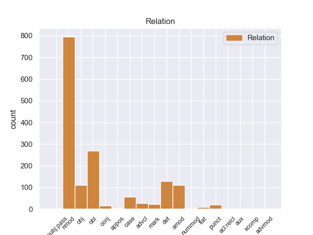
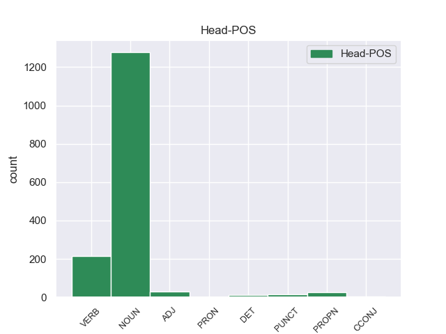
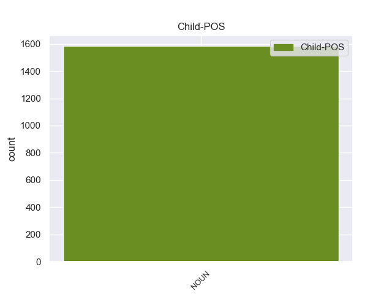

Distribution of features within this leaf



Agreement Rules sorted by frequency.
- When the dependent token is the nominal modifier(nmod) of the head token, and the head token is NOUN and the dependent token is NOUN.
1 Podía _ _ _ _ 0 _ _ _
2 disparar _ _ _ _ 0 _ _ _
3 ocho _ _ _ _ 0 _ _ _
4 piezas piezas NOUN _ Gender=Masc|Number=Sing 0 _ _ _
5 a _ _ _ _ 0 _ _ _
6 la _ _ _ _ 0 _ _ _
7 vez _ _ _ _ 0 _ _ _
8 en _ _ _ _ 0 _ _ _
9 andanada _ _ _ _ 0 _ _ _
10 lateral _ _ _ _ 0 _ _ _
11 y _ _ _ _ 0 _ _ _
12 seis _ _ _ _ 0 _ _ _
13 a _ _ _ _ 0 _ _ _
14 proa _ _ _ _ 0 _ _ _
15 en _ _ _ _ 0 _ _ _
16 vez _ _ _ _ 0 _ _ _
17 de _ _ _ _ 0 _ _ _
18 cuatro _ _ _ _ 0 _ _ _
19 a _ _ _ _ 0 _ _ _
20 banda banda NOUN _ Gender=Fem|Number=Sing 4 nmod _ _
21 y _ _ _ _ 0 _ _ _
22 dos _ _ _ _ 0 _ _ _
23 en _ _ _ _ 0 _ _ _
24 caza _ _ _ _ 0 _ _ _
25 o _ _ _ _ 0 _ _ _
26 retirada _ _ _ _ 0 _ _ _
27 de _ _ _ _ 0 _ _ _
28 sus _ _ _ _ 0 _ _ _
29 predecesores _ _ _ _ 0 _ _ _
30 . _ _ _ _ 0 _ _ _
1 Su _ _ _ _ 0 _ _ _
2 equipo equipo NOUN _ Gender=Masc|Number=Sing 12 obl _ _
3 es _ _ _ _ 0 _ _ _
4 de _ _ _ _ 0 _ _ _
5 Lebrija _ _ _ _ 0 _ _ _
6 : _ _ _ _ 0 _ _ _
7 cuatro _ _ _ _ 0 _ _ _
8 camareros _ _ _ _ 0 _ _ _
9 y _ _ _ _ 0 _ _ _
10 un _ _ _ _ 0 _ _ _
11 cocinero _ _ _ _ 0 _ _ _
12 componen componen NOUN _ Gender=Fem|Number=Sing 0 _ _ _
13 una _ _ _ _ 0 _ _ _
14 maquinaria _ _ _ _ 0 _ _ _
15 que _ _ _ _ 0 _ _ _
16 se _ _ _ _ 0 _ _ _
17 mueve _ _ _ _ 0 _ _ _
18 con _ _ _ _ 0 _ _ _
19 ritmo _ _ _ _ 0 _ _ _
20 diabólico _ _ _ _ 0 _ _ _
21 y _ _ _ _ 0 _ _ _
22 precisión _ _ _ _ 0 _ _ _
23 suiza _ _ _ _ 0 _ _ _
24 . _ _ _ _ 0 _ _ _
1 En _ _ _ _ 0 _ _ _
2 el _ _ _ _ 0 _ _ _
3 caso _ _ _ _ 0 _ _ _
4 de _ _ _ _ 0 _ _ _
5 estrellas _ _ _ _ 0 _ _ _
6 variables _ _ _ _ 0 _ _ _
7 regulares _ _ _ _ 0 _ _ _
8 , _ _ _ _ 0 _ _ _
9 puede _ _ _ _ 0 _ _ _
10 determinar _ _ _ _ 0 _ _ _
11 se _ _ _ _ 0 _ _ _
12 con _ _ _ _ 0 _ _ _
13 precisión _ _ _ _ 0 _ _ _
14 su _ _ _ _ 0 _ _ _
15 período período NOUN _ Gender=Masc|Number=Sing 0 _ _ _
16 de _ _ _ _ 0 _ _ _
17 variabilidad _ _ _ _ 0 _ _ _
18 y _ _ _ _ 0 _ _ _
19 la _ _ _ _ 0 _ _ _
20 amplitud amplitud NOUN _ Gender=Masc|Number=Sing 15 det _ _
21 de _ _ _ _ 0 _ _ _
22 el _ _ _ _ 0 _ _ _
23 mismo _ _ _ _ 0 _ _ _
24 . _ _ _ _ 0 _ _ _
1 Ningún _ _ _ _ 0 _ _ _
2 otro _ _ _ _ 0 _ _ _
3 autor _ _ _ _ 0 _ _ _
4 ha _ _ _ _ 0 _ _ _
5 hecho _ _ _ _ 0 _ _ _
6 acusaciones _ _ _ _ 0 _ _ _
7 semejantes _ _ _ _ 0 _ _ _
8 de _ _ _ _ 0 _ _ _
9 fracaso fracas NOUN _ Gender=Masc|Number=Sing 0 _ _ _
10 en _ _ _ _ 0 _ _ _
11 la _ _ _ _ 0 _ _ _
12 altitud _ _ _ _ 0 _ _ _
13 o _ _ _ _ 0 _ _ _
14 de _ _ _ _ 0 _ _ _
15 ser _ _ _ _ 0 _ _ _
16 desagradecida _ _ _ _ 0 _ _ _
17 contra _ _ _ _ 0 _ _ _
18 Mauduit _ _ _ _ 0 _ _ _
19 en _ _ _ _ 0 _ _ _
20 este _ _ _ _ 0 _ _ _
21 u _ _ _ _ 0 _ _ _
22 otros _ _ _ _ 0 _ _ _
23 ascensos ascensos NOUN _ Gender=Masc|Number=Sing 9 amod _ _
24 . _ _ _ _ 0 _ _ _
1 Estuve _ _ _ _ 0 _ _ _
2 muchos _ _ _ _ 0 _ _ _
3 años _ _ _ _ 0 _ _ _
4 haciendo _ _ _ _ 0 _ _ _
5 envíos _ _ _ _ 0 _ _ _
6 en _ _ _ _ 0 _ _ _
7 esta _ _ _ _ 0 _ _ _
8 oficina oficina NOUN _ Gender=Fem|Number=Sing 11 obl _ _
9 , _ _ _ _ 0 _ _ _
10 pero _ _ _ _ 0 _ _ _
11 trata trata VERB _ Gender=Fem|Number=Sing 0 _ _ _
12 muy _ _ _ _ 0 _ _ _
13 mal _ _ _ _ 0 _ _ _
14 a _ _ _ _ 0 _ _ _
15 sus _ _ _ _ 0 _ _ _
16 trabajadores _ _ _ _ 0 _ _ _
17 , _ _ _ _ 0 _ _ _
18 gritando _ _ _ _ 0 _ _ _
19 les _ _ _ _ 0 _ _ _
20 mientras _ _ _ _ 0 _ _ _
21 están _ _ _ _ 0 _ _ _
22 los _ _ _ _ 0 _ _ _
23 clientes _ _ _ _ 0 _ _ _
24 alli _ _ _ _ 0 _ _ _
25 y _ _ _ _ 0 _ _ _
26 muchisimas _ _ _ _ 0 _ _ _
27 otras _ _ _ _ 0 _ _ _
28 cosas _ _ _ _ 0 _ _ _
29 . _ _ _ _ 0 _ _ _
1 Cada _ _ _ _ 0 _ _ _
2 compartimento _ _ _ _ 0 _ _ _
3 dispone dispone NOUN _ Gender=Fem|Number=Sing 0 _ _ _
4 de _ _ _ _ 0 _ _ _
5 cuarto cuarto NOUN _ Gender=Masc|Number=Sing 3 obj _ _
6 de _ _ _ _ 0 _ _ _
7 baño _ _ _ _ 0 _ _ _
8 completo _ _ _ _ 0 _ _ _
9 con _ _ _ _ 0 _ _ _
10 ducha _ _ _ _ 0 _ _ _
11 e _ _ _ _ 0 _ _ _
12 hidromasaje _ _ _ _ 0 _ _ _
13 . _ _ _ _ 0 _ _ _
1 Abrazo _ _ _ _ 0 _ _ _
2 era _ _ _ _ 0 _ _ _
3 voz _ _ _ _ 0 _ _ _
4 muy _ _ _ _ 0 _ _ _
5 usada _ _ _ _ 0 _ _ _
6 en _ _ _ _ 0 _ _ _
7 las _ _ _ _ 0 _ _ _
8 ceremonias ceremonias NOUN _ Gender=Fem|Number=Sing 0 _ _ _
9 de _ _ _ _ 0 _ _ _
10 caballería _ _ _ _ 0 _ _ _
11 , _ _ _ _ 0 _ _ _
12 en _ _ _ _ 0 _ _ _
13 que _ _ _ _ 0 _ _ _
14 el _ _ _ _ 0 _ _ _
15 recién recién NOUN _ Gender=Masc|Number=Sing 8 case _ _
16 armado _ _ _ _ 0 _ _ _
17 recibía _ _ _ _ 0 _ _ _
18 : _ _ _ _ 0 _ _ _
19 l' _ _ _ _ 0 _ _ _
20 accolade _ _ _ _ 0 _ _ _
21 , _ _ _ _ 0 _ _ _
22 en _ _ _ _ 0 _ _ _
23 francés _ _ _ _ 0 _ _ _
24 . _ _ _ _ 0 _ _ _
1 Los _ _ _ _ 0 _ _ _
2 muebles _ _ _ _ 0 _ _ _
3 y _ _ _ _ 0 _ _ _
4 los _ _ _ _ 0 _ _ _
5 objetos _ _ _ _ 0 _ _ _
6 de _ _ _ _ 0 _ _ _
7 decoración _ _ _ _ 0 _ _ _
8 ( _ _ _ _ 0 _ _ _
9 cuadros _ _ _ _ 0 _ _ _
10 , _ _ _ _ 0 _ _ _
11 fuentes _ _ _ _ 0 _ _ _
12 , _ _ _ _ 0 _ _ _
13 lámparas _ _ _ _ 0 _ _ _
14 también _ _ _ _ 0 _ _ _
15 ) _ _ _ _ 0 _ _ _
16 crean crean VERB _ Gender=Fem|Number=Sing 0 _ _ _
17 un _ _ _ _ 0 _ _ _
18 ambiente ambiente NOUN _ Gender=Masc|Number=Sing 16 obj _ _
19 de _ _ _ _ 0 _ _ _
20 paz _ _ _ _ 0 _ _ _
21 y _ _ _ _ 0 _ _ _
22 de _ _ _ _ 0 _ _ _
23 tranquilidad _ _ _ _ 0 _ _ _
24 , _ _ _ _ 0 _ _ _
25 que _ _ _ _ 0 _ _ _
26 me _ _ _ _ 0 _ _ _
27 gustaría _ _ _ _ 0 _ _ _
28 tener _ _ _ _ 0 _ _ _
29 en _ _ _ _ 0 _ _ _
30 mi _ _ _ _ 0 _ _ _
31 casa _ _ _ _ 0 _ _ _
32 . _ _ _ _ 0 _ _ _
1 Algunas _ _ _ _ 0 _ _ _
2 veces _ _ _ _ 0 _ _ _
3 " _ _ _ _ 0 _ _ _
4 pierde pierde VERB _ Gender=Masc|Number=Sing 0 _ _ _
5 la _ _ _ _ 0 _ _ _
6 cabeza cabeza NOUN _ Gender=Fem|Number=Sing 4 nmod _ _
7 " _ _ _ _ 0 _ _ _
8 por _ _ _ _ 0 _ _ _
9 Momiji _ _ _ _ 0 _ _ _
10 y _ _ _ _ 0 _ _ _
11 a _ _ _ _ 0 _ _ _
12 veces _ _ _ _ 0 _ _ _
13 puede _ _ _ _ 0 _ _ _
14 ser _ _ _ _ 0 _ _ _
15 pervertido _ _ _ _ 0 _ _ _
16 . _ _ _ _ 0 _ _ _
1 Gallery _ _ _ _ 0 _ _ _
2 Hoteles _ _ _ _ 0 _ _ _
3 es _ _ _ _ 0 _ _ _
4 un _ _ _ _ 0 _ _ _
5 grupo _ _ _ _ 0 _ _ _
6 hotelero _ _ _ _ 0 _ _ _
7 independiente _ _ _ _ 0 _ _ _
8 creado _ _ _ _ 0 _ _ _
9 en _ _ _ _ 0 _ _ _
10 2004 _ _ _ _ 0 _ _ _
11 que _ _ _ _ 0 _ _ _
12 actualmente _ _ _ _ 0 _ _ _
13 gestiona gestiona NOUN _ Gender=Fem|Number=Sing 0 _ _ _
14 dos _ _ _ _ 0 _ _ _
15 establecimientos _ _ _ _ 0 _ _ _
16 emblemáticos _ _ _ _ 0 _ _ _
17 por _ _ _ _ 0 _ _ _
18 su _ _ _ _ 0 _ _ _
19 calidad _ _ _ _ 0 _ _ _
20 y _ _ _ _ 0 _ _ _
21 trato trato NOUN _ Gender=Fem|Number=Sing 13 advcl _ _
22 personalizado _ _ _ _ 0 _ _ _
23 : _ _ _ _ 0 _ _ _
24 el _ _ _ _ 0 _ _ _
25 Hotel _ _ _ _ 0 _ _ _
26 Molina _ _ _ _ 0 _ _ _
27 Lario _ _ _ _ 0 _ _ _
28 de _ _ _ _ 0 _ _ _
29 Málaga _ _ _ _ 0 _ _ _
30 y _ _ _ _ 0 _ _ _
31 el _ _ _ _ 0 _ _ _
32 Gallery _ _ _ _ 0 _ _ _
33 Hotel _ _ _ _ 0 _ _ _
34 de _ _ _ _ 0 _ _ _
35 Barcelona _ _ _ _ 0 _ _ _
36 , _ _ _ _ 0 _ _ _
37 inaugurado _ _ _ _ 0 _ _ _
38 en _ _ _ _ 0 _ _ _
39 1991 _ _ _ _ 0 _ _ _
40 y _ _ _ _ 0 _ _ _
41 que _ _ _ _ 0 _ _ _
42 es _ _ _ _ 0 _ _ _
43 un _ _ _ _ 0 _ _ _
44 referente _ _ _ _ 0 _ _ _
45 en _ _ _ _ 0 _ _ _
46 la _ _ _ _ 0 _ _ _
47 ciudad _ _ _ _ 0 _ _ _
48 condal _ _ _ _ 0 _ _ _
49 . _ _ _ _ 0 _ _ _
1 Por _ _ _ _ 0 _ _ _
2 ejemplo _ _ _ _ 0 _ _ _
3 , _ _ _ _ 0 _ _ _
4 en _ _ _ _ 0 _ _ _
5 la _ _ _ _ 0 _ _ _
6 Guerra _ _ _ _ 0 _ _ _
7 de _ _ _ _ 0 _ _ _
8 el _ _ _ _ 0 _ _ _
9 Golfo _ _ _ _ 0 _ _ _
10 los _ _ _ _ 0 _ _ _
11 misiles _ _ _ _ 0 _ _ _
12 de _ _ _ _ 0 _ _ _
13 crucero _ _ _ _ 0 _ _ _
14 fueron _ _ _ _ 0 _ _ _
15 cargados cargados NOUN _ Definite=Def|Gender=Fem|Number=Sing|PronType=Art 0 _ _ _
16 con _ _ _ _ 0 _ _ _
17 filamentos _ _ _ _ 0 _ _ _
18 de _ _ _ _ 0 _ _ _
19 grafito _ _ _ _ 0 _ _ _
20 que _ _ _ _ 0 _ _ _
21 llevados llevados NOUN _ Gender=Fem|Number=Sing 15 mark _ _
22 a _ _ _ _ 0 _ _ _
23 centrales _ _ _ _ 0 _ _ _
24 eléctricas _ _ _ _ 0 _ _ _
25 y _ _ _ _ 0 _ _ _
26 estaciones _ _ _ _ 0 _ _ _
27 de _ _ _ _ 0 _ _ _
28 distribución _ _ _ _ 0 _ _ _
29 de _ _ _ _ 0 _ _ _
30 energía _ _ _ _ 0 _ _ _
31 provocaron _ _ _ _ 0 _ _ _
32 cortocircuitos _ _ _ _ 0 _ _ _
33 . _ _ _ _ 0 _ _ _
1 Las _ _ _ _ 0 _ _ _
2 dos _ _ _ _ 0 _ _ _
3 plataformas _ _ _ _ 0 _ _ _
4 fueron _ _ _ _ 0 _ _ _
5 construidas construidas NOUN _ Gender=Fem|Number=Sing 0 _ _ _
6 en _ _ _ _ 0 _ _ _
7 el _ _ _ _ 0 _ _ _
8 clásico _ _ _ _ 0 _ _ _
9 tardío _ _ _ _ 0 _ _ _
10 y _ _ _ _ 0 _ _ _
11 aparentemente _ _ _ _ 0 _ _ _
12 fueron _ _ _ _ 0 _ _ _
13 cubiertas _ _ _ _ 0 _ _ _
14 en _ _ _ _ 0 _ _ _
15 el _ _ _ _ 0 _ _ _
16 clásico _ _ _ _ 0 _ _ _
17 terminal terminal NOUN _ Gender=Fem|Number=Sing 5 punct _ _
18 . _ _ _ _ 0 _ _ _
1 Juega _ _ _ _ 0 _ _ _
2 tenis _ _ _ _ 0 _ _ _
3 y _ _ _ _ 0 _ _ _
4 , _ _ _ _ 0 _ _ _
5 aficionada _ _ _ _ 0 _ _ _
6 a _ _ _ _ 0 _ _ _
7 los _ _ _ _ 0 _ _ _
8 caballos _ _ _ _ 0 _ _ _
9 , _ _ _ _ 0 _ _ _
10 compitió compitió NOUN _ Gender=Fem|Number=Sing 0 _ _ _
11 en _ _ _ _ 0 _ _ _
12 salto altoer NOUN _ Gender=Fem|Number=Sing 10 conj _ _
13 ecuestre _ _ _ _ 0 _ _ _
14 en _ _ _ _ 0 _ _ _
15 diversos _ _ _ _ 0 _ _ _
16 campeonatos _ _ _ _ 0 _ _ _
17 representando _ _ _ _ 0 _ _ _
18 a _ _ _ _ 0 _ _ _
19 el _ _ _ _ 0 _ _ _
20 Club _ _ _ _ 0 _ _ _
21 de _ _ _ _ 0 _ _ _
22 Polo _ _ _ _ 0 _ _ _
23 y _ _ _ _ 0 _ _ _
24 Equitación _ _ _ _ 0 _ _ _
25 San _ _ _ _ 0 _ _ _
26 Cristóbal _ _ _ _ 0 _ _ _
27 . _ _ _ _ 0 _ _ _
1 Su _ _ _ _ 0 _ _ _
2 video _ _ _ _ 0 _ _ _
3 " _ _ _ _ 0 _ _ _
4 Chips chips PROPN _ Gender=Masc|Number=Sing 0 _ _ _
5 " _ _ _ _ 0 _ _ _
6 , _ _ _ _ 0 _ _ _
7 una _ _ _ _ 0 _ _ _
8 parodia _ _ _ _ 0 _ _ _
9 de _ _ _ _ 0 _ _ _
10 suspenso _ _ _ _ 0 _ _ _
11 sobre _ _ _ _ 0 _ _ _
12 comer _ _ _ _ 0 _ _ _
13 papas papas NOUN _ Gender=Masc|Number=Sing 4 nmod _ _
14 fritas _ _ _ _ 0 _ _ _
15 , _ _ _ _ 0 _ _ _
16 ha _ _ _ _ 0 _ _ _
17 sido _ _ _ _ 0 _ _ _
18 comentado _ _ _ _ 0 _ _ _
19 como _ _ _ _ 0 _ _ _
20 " _ _ _ _ 0 _ _ _
21 brillante _ _ _ _ 0 _ _ _
22 " _ _ _ _ 0 _ _ _
23 por _ _ _ _ 0 _ _ _
24 la _ _ _ _ 0 _ _ _
25 revista _ _ _ _ 0 _ _ _
26 Entertainment _ _ _ _ 0 _ _ _
27 Weekly _ _ _ _ 0 _ _ _
28 , _ _ _ _ 0 _ _ _
29 la _ _ _ _ 0 _ _ _
30 cual _ _ _ _ 0 _ _ _
31 la _ _ _ _ 0 _ _ _
32 ha _ _ _ _ 0 _ _ _
33 incluido _ _ _ _ 0 _ _ _
34 en _ _ _ _ 0 _ _ _
35 su _ _ _ _ 0 _ _ _
36 lista _ _ _ _ 0 _ _ _
37 de _ _ _ _ 0 _ _ _
38 los _ _ _ _ 0 _ _ _
39 " _ _ _ _ 0 _ _ _
40 grandes _ _ _ _ 0 _ _ _
41 momentos _ _ _ _ 0 _ _ _
42 en _ _ _ _ 0 _ _ _
43 la _ _ _ _ 0 _ _ _
44 historia _ _ _ _ 0 _ _ _
45 de _ _ _ _ 0 _ _ _
46 YouTube _ _ _ _ 0 _ _ _
47 " _ _ _ _ 0 _ _ _
48 . _ _ _ _ 0 _ _ _
1 La _ _ _ _ 0 _ _ _
2 idea idea ADJ _ Gender=Fem|Number=Sing 0 _ _ _
3 inicial _ _ _ _ 0 _ _ _
4 de _ _ _ _ 0 _ _ _
5 este _ _ _ _ 0 _ _ _
6 tercer _ _ _ _ 0 _ _ _
7 libro _ _ _ _ 0 _ _ _
8 era _ _ _ _ 0 _ _ _
9 hacer _ _ _ _ 0 _ _ _
10 una _ _ _ _ 0 _ _ _
11 obra _ _ _ _ 0 _ _ _
12 " _ _ _ _ 0 _ _ _
13 para _ _ _ _ 0 _ _ _
14 compartir _ _ _ _ 0 _ _ _
15 con _ _ _ _ 0 _ _ _
16 los _ _ _ _ 0 _ _ _
17 colegas _ _ _ _ 0 _ _ _
18 de _ _ _ _ 0 _ _ _
19 profesión _ _ _ _ 0 _ _ _
20 " _ _ _ _ 0 _ _ _
21 , _ _ _ _ 0 _ _ _
22 y _ _ _ _ 0 _ _ _
23 de _ _ _ _ 0 _ _ _
24 ahí _ _ _ _ 0 _ _ _
25 que _ _ _ _ 0 _ _ _
26 en _ _ _ _ 0 _ _ _
27 las _ _ _ _ 0 _ _ _
28 cantidades cantidades NOUN _ Gender=Masc|Number=Sing 2 nmod _ _
29 de _ _ _ _ 0 _ _ _
30 los _ _ _ _ 0 _ _ _
31 ingredientes _ _ _ _ 0 _ _ _
32 se _ _ _ _ 0 _ _ _
33 incluya _ _ _ _ 0 _ _ _
34 la _ _ _ _ 0 _ _ _
35 versión _ _ _ _ 0 _ _ _
36 para _ _ _ _ 0 _ _ _
37 75 _ _ _ _ 0 _ _ _
38 comensales _ _ _ _ 0 _ _ _
39 , _ _ _ _ 0 _ _ _
40 pero _ _ _ _ 0 _ _ _
41 luego _ _ _ _ 0 _ _ _
42 se _ _ _ _ 0 _ _ _
43 cambió _ _ _ _ 0 _ _ _
44 a _ _ _ _ 0 _ _ _
45 la _ _ _ _ 0 _ _ _
46 dimensión _ _ _ _ 0 _ _ _
47 familiar _ _ _ _ 0 _ _ _
48 ( _ _ _ _ 0 _ _ _
49 2 _ _ _ _ 0 _ _ _
50 y _ _ _ _ 0 _ _ _
51 6 _ _ _ _ 0 _ _ _
52 personas _ _ _ _ 0 _ _ _
53 ) _ _ _ _ 0 _ _ _
54 . _ _ _ _ 0 _ _ _
1 Estuve _ _ _ _ 0 _ _ _
2 muchos _ _ _ _ 0 _ _ _
3 años _ _ _ _ 0 _ _ _
4 haciendo _ _ _ _ 0 _ _ _
5 envíos _ _ _ _ 0 _ _ _
6 en _ _ _ _ 0 _ _ _
7 esta _ _ _ _ 0 _ _ _
8 oficina _ _ _ _ 0 _ _ _
9 , _ _ _ _ 0 _ _ _
10 pero _ _ _ _ 0 _ _ _
11 trata trata VERB _ Gender=Fem|Number=Sing 0 _ _ _
12 muy _ _ _ _ 0 _ _ _
13 mal _ _ _ _ 0 _ _ _
14 a _ _ _ _ 0 _ _ _
15 sus _ _ _ _ 0 _ _ _
16 trabajadores _ _ _ _ 0 _ _ _
17 , _ _ _ _ 0 _ _ _
18 gritando gritando NOUN _ Gender=Fem|Number=Sing 11 advcl _ _
19 les _ _ _ _ 0 _ _ _
20 mientras _ _ _ _ 0 _ _ _
21 están _ _ _ _ 0 _ _ _
22 los _ _ _ _ 0 _ _ _
23 clientes _ _ _ _ 0 _ _ _
24 alli _ _ _ _ 0 _ _ _
25 y _ _ _ _ 0 _ _ _
26 muchisimas _ _ _ _ 0 _ _ _
27 otras _ _ _ _ 0 _ _ _
28 cosas _ _ _ _ 0 _ _ _
29 . _ _ _ _ 0 _ _ _
1 Pedimos _ _ _ _ 0 _ _ _
2 comer _ _ _ _ 0 _ _ _
3 en _ _ _ _ 0 _ _ _
4 el _ _ _ _ 0 _ _ _
5 cenador _ _ _ _ 0 _ _ _
6 ( _ _ _ _ 0 _ _ _
7 una _ _ _ _ 0 _ _ _
8 especie especie PUNCT _ Gender=Fem|Number=Sing 0 _ _ _
9 de _ _ _ _ 0 _ _ _
10 galería galería NOUN _ Gender=Masc|Number=Sing 8 nmod _ _
11 ) _ _ _ _ 0 _ _ _
12 y _ _ _ _ 0 _ _ _
13 se _ _ _ _ 0 _ _ _
14 estaba _ _ _ _ 0 _ _ _
15 genial _ _ _ _ 0 _ _ _
16 . _ _ _ _ 0 _ _ _
1 El _ _ _ _ 0 _ _ _
2 Foro _ _ _ _ 0 _ _ _
3 de _ _ _ _ 0 _ _ _
4 Arcadio _ _ _ _ 0 _ _ _
5 ( _ _ _ _ 0 _ _ _
6 en _ _ _ _ 0 _ _ _
7 latín _ _ _ _ 0 _ _ _
8 : _ _ _ _ 0 _ _ _
9 Forum forum NOUN _ Gender=Masc|Number=Sing 0 _ _ _
10 Arcadii arcadii NOUN _ Gender=Masc|Number=Sing 9 flat _ _
11 , _ _ _ _ 0 _ _ _
12 griego _ _ _ _ 0 _ _ _
13 : _ _ _ _ 0 _ _ _
14 Φόρος _ _ _ _ 0 _ _ _
15 τοῦ _ _ _ _ 0 _ _ _
16 Ἀρκαδίου _ _ _ _ 0 _ _ _
17 ) _ _ _ _ 0 _ _ _
18 fue _ _ _ _ 0 _ _ _
19 construido _ _ _ _ 0 _ _ _
20 por _ _ _ _ 0 _ _ _
21 el _ _ _ _ 0 _ _ _
22 emperador _ _ _ _ 0 _ _ _
23 Arcadio _ _ _ _ 0 _ _ _
24 en _ _ _ _ 0 _ _ _
25 403 _ _ _ _ 0 _ _ _
26 , _ _ _ _ 0 _ _ _
27 en _ _ _ _ 0 _ _ _
28 la _ _ _ _ 0 _ _ _
29 ciudad _ _ _ _ 0 _ _ _
30 de _ _ _ _ 0 _ _ _
31 Constantinopla _ _ _ _ 0 _ _ _
32 , _ _ _ _ 0 _ _ _
33 hoy _ _ _ _ 0 _ _ _
34 Estambul _ _ _ _ 0 _ _ _
35 . _ _ _ _ 0 _ _ _
1 En _ _ _ _ 0 _ _ _
2 épocas _ _ _ _ 0 _ _ _
3 de _ _ _ _ 0 _ _ _
4 grandes _ _ _ _ 0 _ _ _
5 crecidas _ _ _ _ 0 _ _ _
6 se _ _ _ _ 0 _ _ _
7 puede _ _ _ _ 0 _ _ _
8 pescar pescar NOUN _ Gender=Fem|Number=Sing 13 nmod _ _
9 sábalo _ _ _ _ 0 _ _ _
10 y _ _ _ _ 0 _ _ _
11 dorado _ _ _ _ 0 _ _ _
12 que _ _ _ _ 0 _ _ _
13 vienen vienen DET _ Mood=Ind|Number=Sing|Person=3|Tense=Pres|VerbForm=Fin 0 _ _ _
14 río _ _ _ _ 0 _ _ _
15 arriba _ _ _ _ 0 _ _ _
16 desde _ _ _ _ 0 _ _ _
17 el _ _ _ _ 0 _ _ _
18 Carcarañá _ _ _ _ 0 _ _ _
19 . _ _ _ _ 0 _ _ _
1 Llevo _ _ _ _ 0 _ _ _
2 en _ _ _ _ 0 _ _ _
3 casa casa NOUN _ Gender=Fem|Number=Sing 7 obl _ _
4 dos _ _ _ _ 0 _ _ _
5 dias _ _ _ _ 0 _ _ _
6 seguidos _ _ _ _ 0 _ _ _
7 esperando esperando ADJ _ Gender=Masc|Number=Sing 0 _ _ _
8 el _ _ _ _ 0 _ _ _
9 paquete _ _ _ _ 0 _ _ _
10 y _ _ _ _ 0 _ _ _
11 no _ _ _ _ 0 _ _ _
12 hay _ _ _ _ 0 _ _ _
13 señales _ _ _ _ 0 _ _ _
14 ni _ _ _ _ 0 _ _ _
15 puedo _ _ _ _ 0 _ _ _
16 contactar _ _ _ _ 0 _ _ _
17 con _ _ _ _ 0 _ _ _
18 ellos _ _ _ _ 0 _ _ _
19 . _ _ _ _ 0 _ _ _
1 Las _ _ _ _ 0 _ _ _
2 láminas _ _ _ _ 0 _ _ _
3 de _ _ _ _ 0 _ _ _
4 las _ _ _ _ 0 _ _ _
5 hojas _ _ _ _ 0 _ _ _
6 son _ _ _ _ 0 _ _ _
7 verdes _ _ _ _ 0 _ _ _
8 y _ _ _ _ 0 _ _ _
9 nacen nacen VERB _ Gender=Fem|Number=Sing 0 _ _ _
10 en _ _ _ _ 0 _ _ _
11 largos _ _ _ _ 0 _ _ _
12 y _ _ _ _ 0 _ _ _
13 delgados _ _ _ _ 0 _ _ _
14 pecíolos _ _ _ _ 0 _ _ _
15 y _ _ _ _ 0 _ _ _
16 se _ _ _ _ 0 _ _ _
17 dividen _ _ _ _ 0 _ _ _
18 en _ _ _ _ 0 _ _ _
19 tres _ _ _ _ 0 _ _ _
20 foliolos foliolos NOUN _ Gender=Masc|Number=Sing 9 mark _ _
21 en _ _ _ _ 0 _ _ _
22 los _ _ _ _ 0 _ _ _
23 que _ _ _ _ 0 _ _ _
24 cada _ _ _ _ 0 _ _ _
25 uno _ _ _ _ 0 _ _ _
26 tiene _ _ _ _ 0 _ _ _
27 lóbulos _ _ _ _ 0 _ _ _
28 redondeados _ _ _ _ 0 _ _ _
29 a _ _ _ _ 0 _ _ _
30 lo _ _ _ _ 0 _ _ _
31 largo _ _ _ _ 0 _ _ _
32 de _ _ _ _ 0 _ _ _
33 los _ _ _ _ 0 _ _ _
34 bordes _ _ _ _ 0 _ _ _
35 delanteros _ _ _ _ 0 _ _ _
36 . _ _ _ _ 0 _ _ _
1 Afirma _ _ _ _ 0 _ _ _
2 que _ _ _ _ 0 _ _ _
3 las _ _ _ _ 0 _ _ _
4 superficies _ _ _ _ 0 _ _ _
5 comerciales _ _ _ _ 0 _ _ _
6 " _ _ _ _ 0 _ _ _
7 buscan _ _ _ _ 0 _ _ _
8 su _ _ _ _ 0 _ _ _
9 máximo _ _ _ _ 0 _ _ _
10 beneficio _ _ _ _ 0 _ _ _
11 , _ _ _ _ 0 _ _ _
12 presionan _ _ _ _ 0 _ _ _
13 excesivamente _ _ _ _ 0 _ _ _
14 a _ _ _ _ 0 _ _ _
15 el _ _ _ _ 0 _ _ _
16 pequeño _ _ _ _ 0 _ _ _
17 productor productor NOUN _ Gender=Masc|Number=Sing 19 punct _ _
18 , _ _ _ _ 0 _ _ _
19 acaban acaban VERB _ Gender=Fem|Number=Sing 0 _ _ _
20 con _ _ _ _ 0 _ _ _
21 el _ _ _ _ 0 _ _ _
22 comercio _ _ _ _ 0 _ _ _
23 local _ _ _ _ 0 _ _ _
24 y _ _ _ _ 0 _ _ _
25 transforman _ _ _ _ 0 _ _ _
26 negativamente _ _ _ _ 0 _ _ _
27 los _ _ _ _ 0 _ _ _
28 territorios _ _ _ _ 0 _ _ _
29 en _ _ _ _ 0 _ _ _
30 los _ _ _ _ 0 _ _ _
31 que _ _ _ _ 0 _ _ _
32 se _ _ _ _ 0 _ _ _
33 asientan _ _ _ _ 0 _ _ _
34 , _ _ _ _ 0 _ _ _
35 ya _ _ _ _ 0 _ _ _
36 que _ _ _ _ 0 _ _ _
37 se _ _ _ _ 0 _ _ _
38 pierden _ _ _ _ 0 _ _ _
39 en _ _ _ _ 0 _ _ _
40 ellos _ _ _ _ 0 _ _ _
41 las _ _ _ _ 0 _ _ _
42 relaciones _ _ _ _ 0 _ _ _
43 sociales _ _ _ _ 0 _ _ _
44 . _ _ _ _ 0 _ _ _
1 Se _ _ _ _ 0 _ _ _
2 ha _ _ _ _ 0 _ _ _
3 producido _ _ _ _ 0 _ _ _
4 una _ _ _ _ 0 _ _ _
5 dura _ _ _ _ 0 _ _ _
6 competencia _ _ _ _ 0 _ _ _
7 en _ _ _ _ 0 _ _ _
8 la _ _ _ _ 0 _ _ _
9 cadena _ _ _ _ 0 _ _ _
10 de _ _ _ _ 0 _ _ _
11 producción _ _ _ _ 0 _ _ _
12 , _ _ _ _ 0 _ _ _
13 y _ _ _ _ 0 _ _ _
14 asimismo _ _ _ _ 0 _ _ _
15 se _ _ _ _ 0 _ _ _
16 esperan esperan ADJ _ Gender=Fem|Number=Sing 0 _ _ _
17 mayores _ _ _ _ 0 _ _ _
18 caídas caídas NOUN _ Gender=Fem|Number=Sing 16 obj _ _
19 de _ _ _ _ 0 _ _ _
20 el _ _ _ _ 0 _ _ _
21 coste _ _ _ _ 0 _ _ _
22 de _ _ _ _ 0 _ _ _
23 la _ _ _ _ 0 _ _ _
24 energía _ _ _ _ 0 _ _ _
25 fotovoltaica _ _ _ _ 0 _ _ _
26 en _ _ _ _ 0 _ _ _
27 los _ _ _ _ 0 _ _ _
28 próximos _ _ _ _ 0 _ _ _
29 años _ _ _ _ 0 _ _ _
30 , _ _ _ _ 0 _ _ _
31 lo _ _ _ _ 0 _ _ _
32 que _ _ _ _ 0 _ _ _
33 supone _ _ _ _ 0 _ _ _
34 una _ _ _ _ 0 _ _ _
35 creciente _ _ _ _ 0 _ _ _
36 amenaza _ _ _ _ 0 _ _ _
37 a _ _ _ _ 0 _ _ _
38 el _ _ _ _ 0 _ _ _
39 dominio _ _ _ _ 0 _ _ _
40 de _ _ _ _ 0 _ _ _
41 las _ _ _ _ 0 _ _ _
42 fuentes _ _ _ _ 0 _ _ _
43 de _ _ _ _ 0 _ _ _
44 generación _ _ _ _ 0 _ _ _
45 basadas _ _ _ _ 0 _ _ _
46 en _ _ _ _ 0 _ _ _
47 las _ _ _ _ 0 _ _ _
48 energías _ _ _ _ 0 _ _ _
49 fósiles _ _ _ _ 0 _ _ _
50 . _ _ _ _ 0 _ _ _
1 Nunca _ _ _ _ 0 _ _ _
2 pude _ _ _ _ 0 _ _ _
3 arrepentir arrepentir VERB _ Gender=Fem|Number=Sing 0 _ _ _
4 me _ _ _ _ 0 _ _ _
5 menos _ _ _ _ 0 _ _ _
6 de _ _ _ _ 0 _ _ _
7 haber _ _ _ _ 0 _ _ _
8 cambiado _ _ _ _ 0 _ _ _
9 de _ _ _ _ 0 _ _ _
10 veterinario _ _ _ _ 0 _ _ _
11 , _ _ _ _ 0 _ _ _
12 desde _ _ _ _ 0 _ _ _
13 que _ _ _ _ 0 _ _ _
14 llevo _ _ _ _ 0 _ _ _
15 a _ _ _ _ 0 _ _ _
16 mis _ _ _ _ 0 _ _ _
17 perros _ _ _ _ 0 _ _ _
18 allí _ _ _ _ 0 _ _ _
19 , _ _ _ _ 0 _ _ _
20 siempre _ _ _ _ 0 _ _ _
21 un _ _ _ _ 0 _ _ _
22 trato trato NOUN _ Gender=Masc|Number=Sing 3 conj _ _
23 genial _ _ _ _ 0 _ _ _
24 , _ _ _ _ 0 _ _ _
25 muy _ _ _ _ 0 _ _ _
26 limpios _ _ _ _ 0 _ _ _
27 y _ _ _ _ 0 _ _ _
28 muy _ _ _ _ 0 _ _ _
29 profesionales _ _ _ _ 0 _ _ _
30 , _ _ _ _ 0 _ _ _
31 de _ _ _ _ 0 _ _ _
32 categoría _ _ _ _ 0 _ _ _
33 . _ _ _ _ 0 _ _ _
1 Stefanos stefanos PROPN _ Gender=Masc|Number=Sing 0 _ _ _
2 Kotsolis _ _ _ _ 0 _ _ _
3 ( _ _ _ _ 0 _ _ _
4 Atenas _ _ _ _ 0 _ _ _
5 , _ _ _ _ 0 _ _ _
6 Ática _ _ _ _ 0 _ _ _
7 , _ _ _ _ 0 _ _ _
8 Grecia _ _ _ _ 0 _ _ _
9 , _ _ _ _ 0 _ _ _
10 5 _ _ _ _ 0 _ _ _
11 de _ _ _ _ 0 _ _ _
12 junio _ _ _ _ 0 _ _ _
13 de _ _ _ _ 0 _ _ _
14 1979 _ _ _ _ 0 _ _ _
15 ) _ _ _ _ 0 _ _ _
16 es _ _ _ _ 0 _ _ _
17 un _ _ _ _ 0 _ _ _
18 futbolista futbolista NOUN _ Gender=Fem|Number=Sing 1 det _ _
19 de _ _ _ _ 0 _ _ _
20 Grecia _ _ _ _ 0 _ _ _
21 . _ _ _ _ 0 _ _ _
1 Intentando _ _ _ _ 0 _ _ _
2 consolidar _ _ _ _ 0 _ _ _
3 su _ _ _ _ 0 _ _ _
4 reinado _ _ _ _ 0 _ _ _
5 , _ _ _ _ 0 _ _ _
6 deliberadamente _ _ _ _ 0 _ _ _
7 removió _ _ _ _ 0 _ _ _
8 la _ _ _ _ 0 _ _ _
9 contienda _ _ _ _ 0 _ _ _
10 entre _ _ _ _ 0 _ _ _
11 los _ _ _ _ 0 _ _ _
12 dos _ _ _ _ 0 _ _ _
13 clanes _ _ _ _ 0 _ _ _
14 invitándo _ _ _ _ 0 _ _ _
15 los _ _ _ _ 0 _ _ _
16 a _ _ _ _ 0 _ _ _
17 escoger _ _ _ _ 0 _ _ _
18 a _ _ _ _ 0 _ _ _
19 sus _ _ _ _ 0 _ _ _
20 mejores _ _ _ _ 0 _ _ _
21 guerreros guerrero NOUN _ Gender=Masc|Number=Plur 0 _ _ _
22 ninja ninja NOUN _ Gender=Masc|Number=Plur 21 appos _ _
23 para _ _ _ _ 0 _ _ _
24 tener _ _ _ _ 0 _ _ _
25 una _ _ _ _ 0 _ _ _
26 batalla _ _ _ _ 0 _ _ _
27 a _ _ _ _ 0 _ _ _
28 muerte _ _ _ _ 0 _ _ _
29 . _ _ _ _ 0 _ _ _
1 Uno _ _ _ _ 0 _ _ _
2 de _ _ _ _ 0 _ _ _
3 sus _ _ _ _ 0 _ _ _
4 profesores _ _ _ _ 0 _ _ _
5 lo _ _ _ _ 0 _ _ _
6 describió describió VERB _ Gender=Fem|Number=Sing 0 _ _ _
7 más _ _ _ _ 0 _ _ _
8 tarde _ _ _ _ 0 _ _ _
9 como _ _ _ _ 0 _ _ _
10 un _ _ _ _ 0 _ _ _
11 pésimo pésimo NOUN _ Gender=Masc|Number=Sing 6 amod _ _
12 estudiante _ _ _ _ 0 _ _ _
13 . _ _ _ _ 0 _ _ _
1 En _ _ _ _ 0 _ _ _
2 total _ _ _ _ 0 _ _ _
3 , _ _ _ _ 0 _ _ _
4 las _ _ _ _ 0 _ _ _
5 ventas _ _ _ _ 0 _ _ _
6 de _ _ _ _ 0 _ _ _
7 todas _ _ _ _ 0 _ _ _
8 sus _ _ _ _ 0 _ _ _
9 producciones _ _ _ _ 0 _ _ _
10 musicales _ _ _ _ 0 _ _ _
11 superan _ _ _ _ 0 _ _ _
12 los _ _ _ _ 0 _ _ _
13 80 _ _ _ _ 0 _ _ _
14 millones millones PUNCT _ Gender=Fem|Number=Sing 0 _ _ _
15 de _ _ _ _ 0 _ _ _
16 copias copias NOUN _ Gender=Fem|Number=Sing 14 det _ _
17 , _ _ _ _ 0 _ _ _
18 repartidas _ _ _ _ 0 _ _ _
19 en _ _ _ _ 0 _ _ _
20 más _ _ _ _ 0 _ _ _
21 de _ _ _ _ 0 _ _ _
22 30 _ _ _ _ 0 _ _ _
23 millones _ _ _ _ 0 _ _ _
24 de _ _ _ _ 0 _ _ _
25 discos _ _ _ _ 0 _ _ _
26 y _ _ _ _ 0 _ _ _
27 alrededor _ _ _ _ 0 _ _ _
28 de _ _ _ _ 0 _ _ _
29 50 _ _ _ _ 0 _ _ _
30 millones _ _ _ _ 0 _ _ _
31 de _ _ _ _ 0 _ _ _
32 sencillos _ _ _ _ 0 _ _ _
33 . _ _ _ _ 0 _ _ _
1 El _ _ _ _ 0 _ _ _
2 delegado _ _ _ _ 0 _ _ _
3 de _ _ _ _ 0 _ _ _
4 el _ _ _ _ 0 _ _ _
5 IMSS _ _ _ _ 0 _ _ _
6 en _ _ _ _ 0 _ _ _
7 el _ _ _ _ 0 _ _ _
8 estado _ _ _ _ 0 _ _ _
9 , _ _ _ _ 0 _ _ _
10 José _ _ _ _ 0 _ _ _
11 Luis _ _ _ _ 0 _ _ _
12 Dávila _ _ _ _ 0 _ _ _
13 Flores _ _ _ _ 0 _ _ _
14 , _ _ _ _ 0 _ _ _
15 y _ _ _ _ 0 _ _ _
16 el _ _ _ _ 0 _ _ _
17 secretario _ _ _ _ 0 _ _ _
18 federal _ _ _ _ 0 _ _ _
19 de _ _ _ _ 0 _ _ _
20 el _ _ _ _ 0 _ _ _
21 Trabajo _ _ _ _ 0 _ _ _
22 , _ _ _ _ 0 _ _ _
23 Javier _ _ _ _ 0 _ _ _
24 Lozano _ _ _ _ 0 _ _ _
25 Alarcón _ _ _ _ 0 _ _ _
26 , _ _ _ _ 0 _ _ _
27 se _ _ _ _ 0 _ _ _
28 reunieron _ _ _ _ 0 _ _ _
29 con _ _ _ _ 0 _ _ _
30 la _ _ _ _ 0 _ _ _
31 familia _ _ _ _ 0 _ _ _
32 de _ _ _ _ 0 _ _ _
33 Lara _ _ _ _ 0 _ _ _
34 Ríos _ _ _ _ 0 _ _ _
35 , _ _ _ _ 0 _ _ _
36 para _ _ _ _ 0 _ _ _
37 informar _ _ _ _ 0 _ _ _
38 les _ _ _ _ 0 _ _ _
39 que _ _ _ _ 0 _ _ _
40 el _ _ _ _ 0 _ _ _
41 menor menor NOUN _ Number=Sing 43 nsubj:pass _ _
42 será _ _ _ _ 0 _ _ _
43 trasladado trasladar VERB _ Gender=Masc|Number=Sing|Tense=Past|VerbForm=Part 0 _ _ _
44 a _ _ _ _ 0 _ _ _
45 una _ _ _ _ 0 _ _ _
46 clínica _ _ _ _ 0 _ _ _
47 de _ _ _ _ 0 _ _ _
48 Guadalajara _ _ _ _ 0 _ _ _
49 , _ _ _ _ 0 _ _ _
50 Jalisco _ _ _ _ 0 _ _ _
51 , _ _ _ _ 0 _ _ _
52 especializada _ _ _ _ 0 _ _ _
53 en _ _ _ _ 0 _ _ _
54 pacientes _ _ _ _ 0 _ _ _
55 quemados _ _ _ _ 0 _ _ _
56 . _ _ _ _ 0 _ _ _
1 Las _ _ _ _ 0 _ _ _
2 economías economías NOUN _ Gender=Fem|Number=Sing 0 _ _ _
3 de _ _ _ _ 0 _ _ _
4 China _ _ _ _ 0 _ _ _
5 e _ _ _ _ 0 _ _ _
6 India _ _ _ _ 0 _ _ _
7 han _ _ _ _ 0 _ _ _
8 crecido _ _ _ _ 0 _ _ _
9 rápidamente _ _ _ _ 0 _ _ _
10 , _ _ _ _ 0 _ _ _
11 mientras _ _ _ _ 0 _ _ _
12 latinoamérica _ _ _ _ 0 _ _ _
13 ha _ _ _ _ 0 _ _ _
14 experimentado _ _ _ _ 0 _ _ _
15 un _ _ _ _ 0 _ _ _
16 crecimiento crecimiento NOUN _ Gender=Masc|Number=Sing 2 nummod _ _
17 moderado _ _ _ _ 0 _ _ _
18 , _ _ _ _ 0 _ _ _
19 obteniendo _ _ _ _ 0 _ _ _
20 millones _ _ _ _ 0 _ _ _
21 por _ _ _ _ 0 _ _ _
22 encima _ _ _ _ 0 _ _ _
23 de _ _ _ _ 0 _ _ _
24 la _ _ _ _ 0 _ _ _
25 mera _ _ _ _ 0 _ _ _
26 supervivencia _ _ _ _ 0 _ _ _
27 . _ _ _ _ 0 _ _ _
1 Es _ _ _ _ 0 _ _ _
2 un _ _ _ _ 0 _ _ _
3 pequeño pequeño PUNCT _ Gender=Masc|Number=Sing 0 _ _ _
4 hostal _ _ _ _ 0 _ _ _
5 muy _ _ _ _ 0 _ _ _
6 bonito bonito NOUN _ Gender=Masc|Number=Sing 3 amod _ _
7 , _ _ _ _ 0 _ _ _
8 tranquilo _ _ _ _ 0 _ _ _
9 , _ _ _ _ 0 _ _ _
10 limpio _ _ _ _ 0 _ _ _
11 y _ _ _ _ 0 _ _ _
12 familiar _ _ _ _ 0 _ _ _
13 . _ _ _ _ 0 _ _ _
1 Es _ _ _ _ 0 _ _ _
2 internado _ _ _ _ 0 _ _ _
3 en _ _ _ _ 0 _ _ _
4 hospitales _ _ _ _ 0 _ _ _
5 varias _ _ _ _ 0 _ _ _
6 veces _ _ _ _ 0 _ _ _
7 , _ _ _ _ 0 _ _ _
8 pero _ _ _ _ 0 _ _ _
9 su _ _ _ _ 0 _ _ _
10 salud salud NOUN _ Gender=Fem|Number=Sing 17 obl _ _
11 no _ _ _ _ 0 _ _ _
12 mejora _ _ _ _ 0 _ _ _
13 y _ _ _ _ 0 _ _ _
14 en _ _ _ _ 0 _ _ _
15 1963 _ _ _ _ 0 _ _ _
16 se _ _ _ _ 0 _ _ _
17 suicida suicida PROPN _ Gender=Fem|Number=Sing 0 _ _ _
18 en _ _ _ _ 0 _ _ _
19 su _ _ _ _ 0 _ _ _
20 casa _ _ _ _ 0 _ _ _
21 de _ _ _ _ 0 _ _ _
22 campo _ _ _ _ 0 _ _ _
23 . _ _ _ _ 0 _ _ _
1 World _ _ _ _ 0 _ _ _
2 's _ _ _ _ 0 _ _ _
3 Strictest _ _ _ _ 0 _ _ _
4 Parents _ _ _ _ 0 _ _ _
5 ( _ _ _ _ 0 _ _ _
6 En _ _ _ _ 0 _ _ _
7 Latinoámerica _ _ _ _ 0 _ _ _
8 conocido _ _ _ _ 0 _ _ _
9 como _ _ _ _ 0 _ _ _
10 : _ _ _ _ 0 _ _ _
11 Adolescentes _ _ _ _ 0 _ _ _
12 Rebeldes _ _ _ _ 0 _ _ _
13 ) _ _ _ _ 0 _ _ _
14 Es _ _ _ _ 0 _ _ _
15 un _ _ _ _ 0 _ _ _
16 programa _ _ _ _ 0 _ _ _
17 de _ _ _ _ 0 _ _ _
18 televisión _ _ _ _ 0 _ _ _
19 , _ _ _ _ 0 _ _ _
20 estilo _ _ _ _ 0 _ _ _
21 reality _ _ _ _ 0 _ _ _
22 donde _ _ _ _ 0 _ _ _
23 dos _ _ _ _ 0 _ _ _
24 adolescentes _ _ _ _ 0 _ _ _
25 problemáticos _ _ _ _ 0 _ _ _
26 ( _ _ _ _ 0 _ _ _
27 generalmente _ _ _ _ 0 _ _ _
28 un _ _ _ _ 0 _ _ _
29 chico _ _ _ _ 0 _ _ _
30 y _ _ _ _ 0 _ _ _
31 una _ _ _ _ 0 _ _ _
32 chica _ _ _ _ 0 _ _ _
33 ) _ _ _ _ 0 _ _ _
34 , _ _ _ _ 0 _ _ _
35 son _ _ _ _ 0 _ _ _
36 enviados _ _ _ _ 0 _ _ _
37 a _ _ _ _ 0 _ _ _
38 vivir _ _ _ _ 0 _ _ _
39 con _ _ _ _ 0 _ _ _
40 una _ _ _ _ 0 _ _ _
41 familia familia NOUN _ Gender=Fem|Number=Sing 48 case _ _
42 de _ _ _ _ 0 _ _ _
43 reglas _ _ _ _ 0 _ _ _
44 estrictas _ _ _ _ 0 _ _ _
45 , _ _ _ _ 0 _ _ _
46 en _ _ _ _ 0 _ _ _
47 un _ _ _ _ 0 _ _ _
48 intento intento CCONJ _ Gender=Masc|Number=Sing 0 _ _ _
49 de _ _ _ _ 0 _ _ _
50 sus _ _ _ _ 0 _ _ _
51 padres _ _ _ _ 0 _ _ _
52 por _ _ _ _ 0 _ _ _
53 cambiar _ _ _ _ 0 _ _ _
54 sus _ _ _ _ 0 _ _ _
55 vidas _ _ _ _ 0 _ _ _
56 . _ _ _ _ 0 _ _ _
1 En _ _ _ _ 0 _ _ _
2 tono _ _ _ _ 0 _ _ _
3 elegíaco _ _ _ _ 0 _ _ _
4 , _ _ _ _ 0 _ _ _
5 crispado _ _ _ _ 0 _ _ _
6 y _ _ _ _ 0 _ _ _
7 cínico _ _ _ _ 0 _ _ _
8 , _ _ _ _ 0 _ _ _
9 narra narra ADJ _ Gender=Masc|Number=Sing 0 _ _ _
10 tres _ _ _ _ 0 _ _ _
11 décadas décadas NOUN _ Gender=Fem|Number=Sing 9 amod _ _
12 en _ _ _ _ 0 _ _ _
13 la _ _ _ _ 0 _ _ _
14 vida _ _ _ _ 0 _ _ _
15 de _ _ _ _ 0 _ _ _
16 un _ _ _ _ 0 _ _ _
17 trío _ _ _ _ 0 _ _ _
18 de _ _ _ _ 0 _ _ _
19 gangsters _ _ _ _ 0 _ _ _
20 ( _ _ _ _ 0 _ _ _
21 Liotta _ _ _ _ 0 _ _ _
22 , _ _ _ _ 0 _ _ _
23 un _ _ _ _ 0 _ _ _
24 recuperado _ _ _ _ 0 _ _ _
25 Joe _ _ _ _ 0 _ _ _
26 Pesci _ _ _ _ 0 _ _ _
27 y _ _ _ _ 0 _ _ _
28 De _ _ _ _ 0 _ _ _
29 Niro _ _ _ _ 0 _ _ _
30 ) _ _ _ _ 0 _ _ _
31 que _ _ _ _ 0 _ _ _
32 trabajan _ _ _ _ 0 _ _ _
33 para _ _ _ _ 0 _ _ _
34 una _ _ _ _ 0 _ _ _
35 familia _ _ _ _ 0 _ _ _
36 siciliana _ _ _ _ 0 _ _ _
37 asentada _ _ _ _ 0 _ _ _
38 sobre _ _ _ _ 0 _ _ _
39 todo _ _ _ _ 0 _ _ _
40 en _ _ _ _ 0 _ _ _
41 los _ _ _ _ 0 _ _ _
42 alrededores _ _ _ _ 0 _ _ _
43 de _ _ _ _ 0 _ _ _
44 el _ _ _ _ 0 _ _ _
45 aeropuerto _ _ _ _ 0 _ _ _
46 de _ _ _ _ 0 _ _ _
47 Nueva _ _ _ _ 0 _ _ _
48 Jersey _ _ _ _ 0 _ _ _
49 . _ _ _ _ 0 _ _ _
1 Se _ _ _ _ 0 _ _ _
2 ha _ _ _ _ 0 _ _ _
3 producido _ _ _ _ 0 _ _ _
4 una _ _ _ _ 0 _ _ _
5 dura _ _ _ _ 0 _ _ _
6 competencia _ _ _ _ 0 _ _ _
7 en _ _ _ _ 0 _ _ _
8 la _ _ _ _ 0 _ _ _
9 cadena _ _ _ _ 0 _ _ _
10 de _ _ _ _ 0 _ _ _
11 producción _ _ _ _ 0 _ _ _
12 , _ _ _ _ 0 _ _ _
13 y _ _ _ _ 0 _ _ _
14 asimismo _ _ _ _ 0 _ _ _
15 se _ _ _ _ 0 _ _ _
16 esperan esperan ADJ _ Gender=Fem|Number=Sing 0 _ _ _
17 mayores _ _ _ _ 0 _ _ _
18 caídas _ _ _ _ 0 _ _ _
19 de _ _ _ _ 0 _ _ _
20 el _ _ _ _ 0 _ _ _
21 coste coste NOUN _ Gender=Masc|Number=Sing 16 det _ _
22 de _ _ _ _ 0 _ _ _
23 la _ _ _ _ 0 _ _ _
24 energía _ _ _ _ 0 _ _ _
25 fotovoltaica _ _ _ _ 0 _ _ _
26 en _ _ _ _ 0 _ _ _
27 los _ _ _ _ 0 _ _ _
28 próximos _ _ _ _ 0 _ _ _
29 años _ _ _ _ 0 _ _ _
30 , _ _ _ _ 0 _ _ _
31 lo _ _ _ _ 0 _ _ _
32 que _ _ _ _ 0 _ _ _
33 supone _ _ _ _ 0 _ _ _
34 una _ _ _ _ 0 _ _ _
35 creciente _ _ _ _ 0 _ _ _
36 amenaza _ _ _ _ 0 _ _ _
37 a _ _ _ _ 0 _ _ _
38 el _ _ _ _ 0 _ _ _
39 dominio _ _ _ _ 0 _ _ _
40 de _ _ _ _ 0 _ _ _
41 las _ _ _ _ 0 _ _ _
42 fuentes _ _ _ _ 0 _ _ _
43 de _ _ _ _ 0 _ _ _
44 generación _ _ _ _ 0 _ _ _
45 basadas _ _ _ _ 0 _ _ _
46 en _ _ _ _ 0 _ _ _
47 las _ _ _ _ 0 _ _ _
48 energías _ _ _ _ 0 _ _ _
49 fósiles _ _ _ _ 0 _ _ _
50 . _ _ _ _ 0 _ _ _
1 El _ _ _ _ 0 _ _ _
2 barril _ _ _ _ 0 _ _ _
3 de _ _ _ _ 0 _ _ _
4 crudo crudo NOUN _ Gender=Masc|Number=Sing 9 case _ _
5 Brent _ _ _ _ 0 _ _ _
6 subió _ _ _ _ 0 _ _ _
7 hoy _ _ _ _ 0 _ _ _
8 un _ _ _ _ 0 _ _ _
9 0,78 0,78 PROPN _ Gender=Masc|Number=Sing 0 _ _ _
10 por _ _ _ _ 0 _ _ _
11 ciento _ _ _ _ 0 _ _ _
12 en _ _ _ _ 0 _ _ _
13 el _ _ _ _ 0 _ _ _
14 mercado _ _ _ _ 0 _ _ _
15 de _ _ _ _ 0 _ _ _
16 futuros _ _ _ _ 0 _ _ _
17 de _ _ _ _ 0 _ _ _
18 Londres _ _ _ _ 0 _ _ _
19 , _ _ _ _ 0 _ _ _
20 hasta _ _ _ _ 0 _ _ _
21 los _ _ _ _ 0 _ _ _
22 91,19 _ _ _ _ 0 _ _ _
23 dólares _ _ _ _ 0 _ _ _
24 , _ _ _ _ 0 _ _ _
25 en _ _ _ _ 0 _ _ _
26 la _ _ _ _ 0 _ _ _
27 primera _ _ _ _ 0 _ _ _
28 jornada _ _ _ _ 0 _ _ _
29 de _ _ _ _ 0 _ _ _
30 negociación _ _ _ _ 0 _ _ _
31 después _ _ _ _ 0 _ _ _
32 de _ _ _ _ 0 _ _ _
33 que _ _ _ _ 0 _ _ _
34 la _ _ _ _ 0 _ _ _
35 OPEP _ _ _ _ 0 _ _ _
36 decidiera _ _ _ _ 0 _ _ _
37 el _ _ _ _ 0 _ _ _
38 fin _ _ _ _ 0 _ _ _
39 de _ _ _ _ 0 _ _ _
40 semana _ _ _ _ 0 _ _ _
41 mantener _ _ _ _ 0 _ _ _
42 sus _ _ _ _ 0 _ _ _
43 volúmenes _ _ _ _ 0 _ _ _
44 de _ _ _ _ 0 _ _ _
45 producción _ _ _ _ 0 _ _ _
46 . _ _ _ _ 0 _ _ _
1 Les _ _ _ _ 0 _ _ _
2 he _ _ _ _ 0 _ _ _
3 visitado _ _ _ _ 0 _ _ _
4 este _ _ _ _ 0 _ _ _
5 fin _ _ _ _ 0 _ _ _
6 de _ _ _ _ 0 _ _ _
7 semana _ _ _ _ 0 _ _ _
8 , _ _ _ _ 0 _ _ _
9 y _ _ _ _ 0 _ _ _
10 debo _ _ _ _ 0 _ _ _
11 reconocer _ _ _ _ 0 _ _ _
12 que _ _ _ _ 0 _ _ _
13 no _ _ _ _ 0 _ _ _
14 me _ _ _ _ 0 _ _ _
15 esperaba esperaba DET _ Gender=Fem|Number=Sing 0 _ _ _
16 un _ _ _ _ 0 _ _ _
17 sitio _ _ _ _ 0 _ _ _
18 tan _ _ _ _ 0 _ _ _
19 agradable _ _ _ _ 0 _ _ _
20 y _ _ _ _ 0 _ _ _
21 con _ _ _ _ 0 _ _ _
22 una _ _ _ _ 0 _ _ _
23 cocina cocina NOUN _ Gender=Fem|Number=Sing 15 obj _ _
24 que _ _ _ _ 0 _ _ _
25 merece _ _ _ _ 0 _ _ _
26 la _ _ _ _ 0 _ _ _
27 pena _ _ _ _ 0 _ _ _
28 probar _ _ _ _ 0 _ _ _
29 . _ _ _ _ 0 _ _ _
1 Cuando _ _ _ _ 0 _ _ _
2 el _ _ _ _ 0 _ _ _
3 pánico _ _ _ _ 0 _ _ _
4 se _ _ _ _ 0 _ _ _
5 impone impone ADJ _ Gender=Masc|Number=Sing 0 _ _ _
6 en _ _ _ _ 0 _ _ _
7 mi _ _ _ _ 0 _ _ _
8 vida vida NOUN _ Gender=Fem|Number=Sing 5 case _ _
9 recurro _ _ _ _ 0 _ _ _
10 a _ _ _ _ 0 _ _ _
11 la _ _ _ _ 0 _ _ _
12 lectura _ _ _ _ 0 _ _ _
13 . _ _ _ _ 0 _ _ _
1 El _ _ _ _ 0 _ _ _
2 mantel _ _ _ _ 0 _ _ _
3 estaba _ _ _ _ 0 _ _ _
4 sucio _ _ _ _ 0 _ _ _
5 de _ _ _ _ 0 _ _ _
6 migas _ _ _ _ 0 _ _ _
7 de _ _ _ _ 0 _ _ _
8 pan _ _ _ _ 0 _ _ _
9 , _ _ _ _ 0 _ _ _
10 el _ _ _ _ 0 _ _ _
11 trato _ _ _ _ 0 _ _ _
12 deja _ _ _ _ 0 _ _ _
13 mucho _ _ _ _ 0 _ _ _
14 que _ _ _ _ 0 _ _ _
15 desear _ _ _ _ 0 _ _ _
16 , _ _ _ _ 0 _ _ _
17 antes _ _ _ _ 0 _ _ _
18 de _ _ _ _ 0 _ _ _
19 servir _ _ _ _ 0 _ _ _
20 comida _ _ _ _ 0 _ _ _
21 , _ _ _ _ 0 _ _ _
22 deberian _ _ _ _ 0 _ _ _
23 ofrecer _ _ _ _ 0 _ _ _
24 la _ _ _ _ 0 _ _ _
25 con _ _ _ _ 0 _ _ _
26 un _ _ _ _ 0 _ _ _
27 poco poco PRON _ Gender=Masc|Number=Sing|NumType=Card|PronType=Ind 0 _ _ _
28 de _ _ _ _ 0 _ _ _
29 educacion educacion NOUN _ Gender=Masc|Number=Sing 27 nmod _ SpaceAfter=No
30 . _ _ _ _ 0 _ _ _
1 Anotó _ _ _ _ 0 _ _ _
2 su _ _ _ _ 0 _ _ _
3 primer _ _ _ _ 0 _ _ _
4 gol oler NOUN _ Gender=Masc|Number=Sing 32 mark _ _
5 con _ _ _ _ 0 _ _ _
6 los _ _ _ _ 0 _ _ _
7 Dragones _ _ _ _ 0 _ _ _
8 Celestes _ _ _ _ 0 _ _ _
9 el _ _ _ _ 0 _ _ _
10 5 _ _ _ _ 0 _ _ _
11 de _ _ _ _ 0 _ _ _
12 noviembre _ _ _ _ 0 _ _ _
13 de _ _ _ _ 0 _ _ _
14 el _ _ _ _ 0 _ _ _
15 2011 _ _ _ _ 0 _ _ _
16 , _ _ _ _ 0 _ _ _
17 en _ _ _ _ 0 _ _ _
18 un _ _ _ _ 0 _ _ _
19 partido _ _ _ _ 0 _ _ _
20 de _ _ _ _ 0 _ _ _
21 el _ _ _ _ 0 _ _ _
22 Torneo _ _ _ _ 0 _ _ _
23 de _ _ _ _ 0 _ _ _
24 Clausura _ _ _ _ 0 _ _ _
25 2011 _ _ _ _ 0 _ _ _
26 contra _ _ _ _ 0 _ _ _
27 Unión _ _ _ _ 0 _ _ _
28 La _ _ _ _ 0 _ _ _
29 Calera _ _ _ _ 0 _ _ _
30 el _ _ _ _ 0 _ _ _
31 cual _ _ _ _ 0 _ _ _
32 acabó acabó DET _ Gender=Fem|Number=Sing 0 _ _ _
33 2-1 _ _ _ _ 0 _ _ _
34 a _ _ _ _ 0 _ _ _
35 favor _ _ _ _ 0 _ _ _
36 de _ _ _ _ 0 _ _ _
37 el _ _ _ _ 0 _ _ _
38 « _ _ _ _ 0 _ _ _
39 cuadro _ _ _ _ 0 _ _ _
40 iquiqueño _ _ _ _ 0 _ _ _
41 » _ _ _ _ 0 _ _ _
42 . _ _ _ _ 0 _ _ _
1 El _ _ _ _ 0 _ _ _
2 primero _ _ _ _ 0 _ _ _
3 , _ _ _ _ 0 _ _ _
4 el _ _ _ _ 0 _ _ _
5 de _ _ _ _ 0 _ _ _
6 España _ _ _ _ 0 _ _ _
7 costará _ _ _ _ 0 _ _ _
8 en _ _ _ _ 0 _ _ _
9 torno _ _ _ _ 0 _ _ _
10 a _ _ _ _ 0 _ _ _
11 los _ _ _ _ 0 _ _ _
12 25 _ _ _ _ 0 _ _ _
13 kilos kilos NOUN _ Gender=Masc|Number=Sing 23 flat _ _
14 y _ _ _ _ 0 _ _ _
15 el _ _ _ _ 0 _ _ _
16 segundo _ _ _ _ 0 _ _ _
17 , _ _ _ _ 0 _ _ _
18 el _ _ _ _ 0 _ _ _
19 argentino _ _ _ _ 0 _ _ _
20 valdrá _ _ _ _ 0 _ _ _
21 unos _ _ _ _ 0 _ _ _
22 35 _ _ _ _ 0 _ _ _
23 millones millones VERB _ Gender=Fem|Number=Sing 0 _ _ _
24 de _ _ _ _ 0 _ _ _
25 euros _ _ _ _ 0 _ _ _
26 que _ _ _ _ 0 _ _ _
27 pondría _ _ _ _ 0 _ _ _
28 sobre _ _ _ _ 0 _ _ _
29 la _ _ _ _ 0 _ _ _
30 mesa _ _ _ _ 0 _ _ _
31 El _ _ _ _ 0 _ _ _
32 Jeque _ _ _ _ 0 _ _ _
33 según _ _ _ _ 0 _ _ _
34 Nuevo _ _ _ _ 0 _ _ _
35 Fútbol _ _ _ _ 0 _ _ _
36 . _ _ _ _ 0 _ _ _
1 Le _ _ _ _ 0 _ _ _
2 Cendre _ _ _ _ 0 _ _ _
3 es _ _ _ _ 0 _ _ _
4 una _ _ _ _ 0 _ _ _
5 población _ _ _ _ 0 _ _ _
6 y _ _ _ _ 0 _ _ _
7 comuna _ _ _ _ 0 _ _ _
8 francesa _ _ _ _ 0 _ _ _
9 , _ _ _ _ 0 _ _ _
10 situada _ _ _ _ 0 _ _ _
11 en _ _ _ _ 0 _ _ _
12 la _ _ _ _ 0 _ _ _
13 región _ _ _ _ 0 _ _ _
14 de _ _ _ _ 0 _ _ _
15 Auvernia _ _ _ _ 0 _ _ _
16 , _ _ _ _ 0 _ _ _
17 departamento _ _ _ _ 0 _ _ _
18 de _ _ _ _ 0 _ _ _
19 Puy _ _ _ _ 0 _ _ _
20 - _ _ _ _ 0 _ _ _
21 de _ _ _ _ 0 _ _ _
22 - _ _ _ _ 0 _ _ _
23 Dôme dôme PROPN _ Gender=Masc|Number=Sing 0 _ _ _
24 , _ _ _ _ 0 _ _ _
25 en _ _ _ _ 0 _ _ _
26 el _ _ _ _ 0 _ _ _
27 distrito _ _ _ _ 0 _ _ _
28 de _ _ _ _ 0 _ _ _
29 Clermont clermont NOUN _ Gender=Masc|Number=Sing 23 flat _ _
30 - _ _ _ _ 0 _ _ _
31 Ferrand _ _ _ _ 0 _ _ _
32 y _ _ _ _ 0 _ _ _
33 cantón _ _ _ _ 0 _ _ _
34 de _ _ _ _ 0 _ _ _
35 Veyre _ _ _ _ 0 _ _ _
36 - _ _ _ _ 0 _ _ _
37 Monton _ _ _ _ 0 _ _ _
38 . _ _ _ _ 0 _ _ _
1 Todos _ _ _ _ 0 _ _ _
2 los _ _ _ _ 0 _ _ _
3 comienzos comienzos NOUN _ Gender=Masc|Number=Sing 12 case _ _
4 son _ _ _ _ 0 _ _ _
5 difíciles _ _ _ _ 0 _ _ _
6 , _ _ _ _ 0 _ _ _
7 pero _ _ _ _ 0 _ _ _
8 poco _ _ _ _ 0 _ _ _
9 a _ _ _ _ 0 _ _ _
10 poco _ _ _ _ 0 _ _ _
11 lo _ _ _ _ 0 _ _ _
12 coseguirás coseguirás DET _ Gender=Fem|Number=Sing 0 _ _ _
13 . _ _ _ _ 0 _ _ _
1 De _ _ _ _ 0 _ _ _
2 los _ _ _ _ 0 _ _ _
3 1873 _ _ _ _ 0 _ _ _
4 habitantes _ _ _ _ 0 _ _ _
5 , _ _ _ _ 0 _ _ _
6 el _ _ _ _ 0 _ _ _
7 municipio _ _ _ _ 0 _ _ _
8 de _ _ _ _ 0 _ _ _
9 South _ _ _ _ 0 _ _ _
10 Arm arm NOUN _ Gender=Masc|Number=Sing 15 punct _ _
11 estaba _ _ _ _ 0 _ _ _
12 compuesto _ _ _ _ 0 _ _ _
13 por _ _ _ _ 0 _ _ _
14 el _ _ _ _ 0 _ _ _
15 95.89 95.89 PROPN _ Gender=Masc|Number=Sing 0 _ _ _
16 % _ _ _ _ 0 _ _ _
17 blancos _ _ _ _ 0 _ _ _
18 , _ _ _ _ 0 _ _ _
19 el _ _ _ _ 0 _ _ _
20 0.21 _ _ _ _ 0 _ _ _
21 % _ _ _ _ 0 _ _ _
22 eran _ _ _ _ 0 _ _ _
23 afroamericanos _ _ _ _ 0 _ _ _
24 , _ _ _ _ 0 _ _ _
25 el _ _ _ _ 0 _ _ _
26 1.33 _ _ _ _ 0 _ _ _
27 % _ _ _ _ 0 _ _ _
28 eran _ _ _ _ 0 _ _ _
29 amerindios _ _ _ _ 0 _ _ _
30 , _ _ _ _ 0 _ _ _
31 el _ _ _ _ 0 _ _ _
32 0.21 _ _ _ _ 0 _ _ _
33 % _ _ _ _ 0 _ _ _
34 eran _ _ _ _ 0 _ _ _
35 asiáticos _ _ _ _ 0 _ _ _
36 , _ _ _ _ 0 _ _ _
37 el _ _ _ _ 0 _ _ _
38 0 _ _ _ _ 0 _ _ _
39 % _ _ _ _ 0 _ _ _
40 eran _ _ _ _ 0 _ _ _
41 isleños _ _ _ _ 0 _ _ _
42 de _ _ _ _ 0 _ _ _
43 el _ _ _ _ 0 _ _ _
44 Pacífico _ _ _ _ 0 _ _ _
45 , _ _ _ _ 0 _ _ _
46 el _ _ _ _ 0 _ _ _
47 0.59 _ _ _ _ 0 _ _ _
48 % _ _ _ _ 0 _ _ _
49 eran _ _ _ _ 0 _ _ _
50 de _ _ _ _ 0 _ _ _
51 otras _ _ _ _ 0 _ _ _
52 razas _ _ _ _ 0 _ _ _
53 y _ _ _ _ 0 _ _ _
54 el _ _ _ _ 0 _ _ _
55 1.76 _ _ _ _ 0 _ _ _
56 % _ _ _ _ 0 _ _ _
57 pertenecían _ _ _ _ 0 _ _ _
58 a _ _ _ _ 0 _ _ _
59 dos _ _ _ _ 0 _ _ _
60 o _ _ _ _ 0 _ _ _
61 más _ _ _ _ 0 _ _ _
62 razas _ _ _ _ 0 _ _ _
63 . _ _ _ _ 0 _ _ _
1 Bolaño _ _ _ _ 0 _ _ _
2 fallecía _ _ _ _ 0 _ _ _
3 el _ _ _ _ 0 _ _ _
4 martes _ _ _ _ 0 _ _ _
5 15 _ _ _ _ 0 _ _ _
6 , _ _ _ _ 0 _ _ _
7 tras _ _ _ _ 0 _ _ _
8 pasar _ _ _ _ 0 _ _ _
9 diez _ _ _ _ 0 _ _ _
10 días _ _ _ _ 0 _ _ _
11 en _ _ _ _ 0 _ _ _
12 coma coma NOUN _ Gender=Masc|Number=Sing 20 mark _ _
13 como _ _ _ _ 0 _ _ _
14 consecuencia _ _ _ _ 0 _ _ _
15 de _ _ _ _ 0 _ _ _
16 una _ _ _ _ 0 _ _ _
17 insuficiencia _ _ _ _ 0 _ _ _
18 hepática _ _ _ _ 0 _ _ _
19 mientras _ _ _ _ 0 _ _ _
20 esperaba esperaba ADJ _ Gender=Fem|Number=Sing 0 _ _ _
21 en _ _ _ _ 0 _ _ _
22 vano _ _ _ _ 0 _ _ _
23 por _ _ _ _ 0 _ _ _
24 un _ _ _ _ 0 _ _ _
25 donante _ _ _ _ 0 _ _ _
26 para _ _ _ _ 0 _ _ _
27 realizar _ _ _ _ 0 _ _ _
28 se _ _ _ _ 0 _ _ _
29 un _ _ _ _ 0 _ _ _
30 trasplante _ _ _ _ 0 _ _ _
31 de _ _ _ _ 0 _ _ _
32 hígado _ _ _ _ 0 _ _ _
33 . _ _ _ _ 0 _ _ _
1 Los _ _ _ _ 0 _ _ _
2 circuitos _ _ _ _ 0 _ _ _
3 propuestos _ _ _ _ 0 _ _ _
4 por _ _ _ _ 0 _ _ _
5 Kuoni _ _ _ _ 0 _ _ _
6 te _ _ _ _ 0 _ _ _
7 llevarán _ _ _ _ 0 _ _ _
8 a _ _ _ _ 0 _ _ _
9 capitales _ _ _ _ 0 _ _ _
10 de _ _ _ _ 0 _ _ _
11 el _ _ _ _ 0 _ _ _
12 mundo _ _ _ _ 0 _ _ _
13 como _ _ _ _ 0 _ _ _
14 : _ _ _ _ 0 _ _ _
15 Beijing _ _ _ _ 0 _ _ _
16 y _ _ _ _ 0 _ _ _
17 Shanghai _ _ _ _ 0 _ _ _
18 ( _ _ _ _ 0 _ _ _
19 la _ _ _ _ 0 _ _ _
20 tradición _ _ _ _ 0 _ _ _
21 se _ _ _ _ 0 _ _ _
22 funde funde VERB _ Gender=Fem|Number=Sing 0 _ _ _
23 entre _ _ _ _ 0 _ _ _
24 sus _ _ _ _ 0 _ _ _
25 mercados _ _ _ _ 0 _ _ _
26 ) _ _ _ _ 0 _ _ _
27 , _ _ _ _ 0 _ _ _
28 Hong _ _ _ _ 0 _ _ _
29 Kong _ _ _ _ 0 _ _ _
30 ( _ _ _ _ 0 _ _ _
31 a _ _ _ _ 0 _ _ _
32 caballo _ _ _ _ 0 _ _ _
33 entre _ _ _ _ 0 _ _ _
34 oriente _ _ _ _ 0 _ _ _
35 y _ _ _ _ 0 _ _ _
36 occidente _ _ _ _ 0 _ _ _
37 ) _ _ _ _ 0 _ _ _
38 , _ _ _ _ 0 _ _ _
39 El _ _ _ _ 0 _ _ _
40 Cairo _ _ _ _ 0 _ _ _
41 ( _ _ _ _ 0 _ _ _
42 bazares _ _ _ _ 0 _ _ _
43 y _ _ _ _ 0 _ _ _
44 zocos zocos NOUN _ Gender=Fem|Number=Sing 22 det _ _
45 con _ _ _ _ 0 _ _ _
46 estilo _ _ _ _ 0 _ _ _
47 ) _ _ _ _ 0 _ _ _
48 , _ _ _ _ 0 _ _ _
49 Las _ _ _ _ 0 _ _ _
50 Vegas _ _ _ _ 0 _ _ _
51 ( _ _ _ _ 0 _ _ _
52 donde _ _ _ _ 0 _ _ _
53 las _ _ _ _ 0 _ _ _
54 compras _ _ _ _ 0 _ _ _
55 no _ _ _ _ 0 _ _ _
56 son _ _ _ _ 0 _ _ _
57 sólo _ _ _ _ 0 _ _ _
58 un _ _ _ _ 0 _ _ _
59 juego _ _ _ _ 0 _ _ _
60 ) _ _ _ _ 0 _ _ _
61 , _ _ _ _ 0 _ _ _
62 Nueva _ _ _ _ 0 _ _ _
63 York _ _ _ _ 0 _ _ _
64 ( _ _ _ _ 0 _ _ _
65 siempre _ _ _ _ 0 _ _ _
66 excepcional _ _ _ _ 0 _ _ _
67 y _ _ _ _ 0 _ _ _
68 avant _ _ _ _ 0 _ _ _
69 - _ _ _ _ 0 _ _ _
70 garde _ _ _ _ 0 _ _ _
71 ) _ _ _ _ 0 _ _ _
72 , _ _ _ _ 0 _ _ _
73 Dubai _ _ _ _ 0 _ _ _
74 ( _ _ _ _ 0 _ _ _
75 el _ _ _ _ 0 _ _ _
76 lujo _ _ _ _ 0 _ _ _
77 de _ _ _ _ 0 _ _ _
78 las _ _ _ _ 0 _ _ _
79 mil _ _ _ _ 0 _ _ _
80 y _ _ _ _ 0 _ _ _
81 una _ _ _ _ 0 _ _ _
82 noches _ _ _ _ 0 _ _ _
83 ) _ _ _ _ 0 _ _ _
84 y _ _ _ _ 0 _ _ _
85 Bangkok _ _ _ _ 0 _ _ _
86 ( _ _ _ _ 0 _ _ _
87 exotismo _ _ _ _ 0 _ _ _
88 y _ _ _ _ 0 _ _ _
89 paradoja _ _ _ _ 0 _ _ _
90 en _ _ _ _ 0 _ _ _
91 el _ _ _ _ 0 _ _ _
92 corazón _ _ _ _ 0 _ _ _
93 de _ _ _ _ 0 _ _ _
94 el _ _ _ _ 0 _ _ _
95 sudoeste _ _ _ _ 0 _ _ _
96 asiático _ _ _ _ 0 _ _ _
97 ) _ _ _ _ 0 _ _ _
98 . _ _ _ _ 0 _ _ _
1 Su _ _ _ _ 0 _ _ _
2 hija _ _ _ _ 0 _ _ _
3 , _ _ _ _ 0 _ _ _
4 doña _ _ _ _ 0 _ _ _
5 Mencía _ _ _ _ 0 _ _ _
6 , _ _ _ _ 0 _ _ _
7 casada _ _ _ _ 0 _ _ _
8 con _ _ _ _ 0 _ _ _
9 el _ _ _ _ 0 _ _ _
10 señor _ _ _ _ 0 _ _ _
11 de _ _ _ _ 0 _ _ _
12 la _ _ _ _ 0 _ _ _
13 cercana _ _ _ _ 0 _ _ _
14 Beleña _ _ _ _ 0 _ _ _
15 de _ _ _ _ 0 _ _ _
16 Sorbe _ _ _ _ 0 _ _ _
17 , _ _ _ _ 0 _ _ _
18 trató trató NOUN _ Gender=Fem|Number=Sing 31 conj _ _
19 de _ _ _ _ 0 _ _ _
20 vender _ _ _ _ 0 _ _ _
21 la _ _ _ _ 0 _ _ _
22 villa _ _ _ _ 0 _ _ _
23 a _ _ _ _ 0 _ _ _
24 comienzos _ _ _ _ 0 _ _ _
25 de _ _ _ _ 0 _ _ _
26 el _ _ _ _ 0 _ _ _
27 siglo _ _ _ _ 0 _ _ _
28 XV _ _ _ _ 0 _ _ _
29 , _ _ _ _ 0 _ _ _
30 y _ _ _ _ 0 _ _ _
31 acabó acabó DET _ Gender=Fem|Number=Sing 0 _ _ _
32 por _ _ _ _ 0 _ _ _
33 hacer _ _ _ _ 0 _ _ _
34 lo _ _ _ _ 0 _ _ _
35 a _ _ _ _ 0 _ _ _
36 dos _ _ _ _ 0 _ _ _
37 de _ _ _ _ 0 _ _ _
38 sus _ _ _ _ 0 _ _ _
39 parientes _ _ _ _ 0 _ _ _
40 , _ _ _ _ 0 _ _ _
41 que _ _ _ _ 0 _ _ _
42 la _ _ _ _ 0 _ _ _
43 compraron _ _ _ _ 0 _ _ _
44 juntos _ _ _ _ 0 _ _ _
45 , _ _ _ _ 0 _ _ _
46 Diego _ _ _ _ 0 _ _ _
47 Hurtado _ _ _ _ 0 _ _ _
48 de _ _ _ _ 0 _ _ _
49 Mendoza _ _ _ _ 0 _ _ _
50 , _ _ _ _ 0 _ _ _
51 almirante _ _ _ _ 0 _ _ _
52 mayor _ _ _ _ 0 _ _ _
53 de _ _ _ _ 0 _ _ _
54 Castilla _ _ _ _ 0 _ _ _
55 , _ _ _ _ 0 _ _ _
56 y _ _ _ _ 0 _ _ _
57 Diego _ _ _ _ 0 _ _ _
58 López _ _ _ _ 0 _ _ _
59 de _ _ _ _ 0 _ _ _
60 Estúñiga _ _ _ _ 0 _ _ _
61 , _ _ _ _ 0 _ _ _
62 justicia _ _ _ _ 0 _ _ _
63 mayor _ _ _ _ 0 _ _ _
64 de _ _ _ _ 0 _ _ _
65 el _ _ _ _ 0 _ _ _
66 reino _ _ _ _ 0 _ _ _
67 en _ _ _ _ 0 _ _ _
68 marzo _ _ _ _ 0 _ _ _
69 de _ _ _ _ 0 _ _ _
70 1403 _ _ _ _ 0 _ _ _
71 . _ _ _ _ 0 _ _ _
1 La _ _ _ _ 0 _ _ _
2 música _ _ _ _ 0 _ _ _
3 de _ _ _ _ 0 _ _ _
4 fondo _ _ _ _ 0 _ _ _
5 que _ _ _ _ 0 _ _ _
6 suena _ _ _ _ 0 _ _ _
7 en _ _ _ _ 0 _ _ _
8 la _ _ _ _ 0 _ _ _
9 cinta _ _ _ _ 0 _ _ _
10 de _ _ _ _ 0 _ _ _
11 video _ _ _ _ 0 _ _ _
12 de _ _ _ _ 0 _ _ _
13 Flanders _ _ _ _ 0 _ _ _
14 es _ _ _ _ 0 _ _ _
15 I i NOUN _ Mood=Ind|Number=Sing|Person=3|Tense=Pres|VerbForm=Fin 18 acl:relcl _ _
16 'm _ _ _ _ 0 _ _ _
17 Too _ _ _ _ 0 _ _ _
18 Sexy sexy PROPN _ Mood=Ind|Number=Sing|Person=3|Tense=Pres|VerbForm=Fin 0 _ _ _
19 de _ _ _ _ 0 _ _ _
20 Right _ _ _ _ 0 _ _ _
21 Said _ _ _ _ 0 _ _ _
22 Fred _ _ _ _ 0 _ _ _
23 . _ _ _ _ 0 _ _ _
1 Pero _ _ _ _ 0 _ _ _
2 sobre _ _ _ _ 0 _ _ _
3 todo _ _ _ _ 0 _ _ _
4 se _ _ _ _ 0 _ _ _
5 trata trata PUNCT _ Gender=Fem|Number=Sing 0 _ _ _
6 de _ _ _ _ 0 _ _ _
7 un _ _ _ _ 0 _ _ _
8 conjunto conjunto NOUN _ Gender=Masc|Number=Sing 5 conj _ _
9 alemán _ _ _ _ 0 _ _ _
10 , _ _ _ _ 0 _ _ _
11 que _ _ _ _ 0 _ _ _
12 sabe _ _ _ _ 0 _ _ _
13 competir _ _ _ _ 0 _ _ _
14 . _ _ _ _ 0 _ _ _
1 Incluso _ _ _ _ 0 _ _ _
2 uno _ _ _ _ 0 _ _ _
3 de _ _ _ _ 0 _ _ _
4 los _ _ _ _ 0 _ _ _
5 personajes _ _ _ _ 0 _ _ _
6 que _ _ _ _ 0 _ _ _
7 aparecen _ _ _ _ 0 _ _ _
8 a _ _ _ _ 0 _ _ _
9 el _ _ _ _ 0 _ _ _
10 inicio inicio NOUN _ Gender=Masc|Number=Sing 0 _ _ _
11 de _ _ _ _ 0 _ _ _
12 la _ _ _ _ 0 _ _ _
13 película _ _ _ _ 0 _ _ _
14 , _ _ _ _ 0 _ _ _
15 Wu _ _ _ _ 0 _ _ _
16 Han _ _ _ _ 0 _ _ _
17 ( _ _ _ _ 0 _ _ _
18 a _ _ _ _ 0 _ _ _
19 el _ _ _ _ 0 _ _ _
20 que _ _ _ _ 0 _ _ _
21 disparan disparan NOUN _ Gender=Fem|Number=Sing 10 aux _ _
22 en _ _ _ _ 0 _ _ _
23 el _ _ _ _ 0 _ _ _
24 Club _ _ _ _ 0 _ _ _
25 Obi _ _ _ _ 0 _ _ _
26 Wan _ _ _ _ 0 _ _ _
27 ) _ _ _ _ 0 _ _ _
28 , _ _ _ _ 0 _ _ _
29 nos _ _ _ _ 0 _ _ _
30 acompañará _ _ _ _ 0 _ _ _
31 durante _ _ _ _ 0 _ _ _
32 parte _ _ _ _ 0 _ _ _
33 de _ _ _ _ 0 _ _ _
34 el _ _ _ _ 0 _ _ _
35 transcurso _ _ _ _ 0 _ _ _
36 de _ _ _ _ 0 _ _ _
37 el _ _ _ _ 0 _ _ _
38 juego _ _ _ _ 0 _ _ _
39 . _ _ _ _ 0 _ _ _
1 El _ _ _ _ 0 _ _ _
2 25 _ _ _ _ 0 _ _ _
3 de _ _ _ _ 0 _ _ _
4 julio _ _ _ _ 0 _ _ _
5 , _ _ _ _ 0 _ _ _
6 en _ _ _ _ 0 _ _ _
7 Carolina _ _ _ _ 0 _ _ _
8 de _ _ _ _ 0 _ _ _
9 el _ _ _ _ 0 _ _ _
10 Sur _ _ _ _ 0 _ _ _
11 , _ _ _ _ 0 _ _ _
12 sucedió sucedió VERB _ Gender=Fem|Number=Sing 0 _ _ _
13 algo _ _ _ _ 0 _ _ _
14 similar _ _ _ _ 0 _ _ _
15 , _ _ _ _ 0 _ _ _
16 lo _ _ _ _ 0 _ _ _
17 que _ _ _ _ 0 _ _ _
18 terminó terminó NOUN _ Gender=Fem|Number=Sing 12 xcomp _ _
19 con _ _ _ _ 0 _ _ _
20 una _ _ _ _ 0 _ _ _
21 pelea _ _ _ _ 0 _ _ _
22 espectacular _ _ _ _ 0 _ _ _
23 y _ _ _ _ 0 _ _ _
24 el _ _ _ _ 0 _ _ _
25 resultado _ _ _ _ 0 _ _ _
26 de _ _ _ _ 0 _ _ _
27 60 _ _ _ _ 0 _ _ _
28 heridos _ _ _ _ 0 _ _ _
29 . _ _ _ _ 0 _ _ _
1 Freud _ _ _ _ 0 _ _ _
2 et _ _ _ _ 0 _ _ _
3 la _ _ _ _ 0 _ _ _
4 faute faute PROPN _ Gender=Masc|Number=Sing 0 _ _ _
5 cachée _ _ _ _ 0 _ _ _
6 du _ _ _ _ 0 _ _ _
7 père _ _ _ _ 0 _ _ _
8 ( _ _ _ _ 0 _ _ _
9 1979 _ _ _ _ 0 _ _ _
10 ) _ _ _ _ 0 _ _ _
11 , _ _ _ _ 0 _ _ _
12 fueron _ _ _ _ 0 _ _ _
13 rechazadas _ _ _ _ 0 _ _ _
14 por _ _ _ _ 0 _ _ _
15 muchos _ _ _ _ 0 _ _ _
16 de _ _ _ _ 0 _ _ _
17 sus _ _ _ _ 0 _ _ _
18 colegas colegas NOUN _ Definite=Def|Gender=Masc|Number=Sing|PronType=Art 4 amod _ _
19 , _ _ _ _ 0 _ _ _
20 lo _ _ _ _ 0 _ _ _
21 que _ _ _ _ 0 _ _ _
22 provocó _ _ _ _ 0 _ _ _
23 su _ _ _ _ 0 _ _ _
24 salida _ _ _ _ 0 _ _ _
25 de _ _ _ _ 0 _ _ _
26 la _ _ _ _ 0 _ _ _
27 Universidad _ _ _ _ 0 _ _ _
28 de _ _ _ _ 0 _ _ _
29 La _ _ _ _ 0 _ _ _
30 Sorbona _ _ _ _ 0 _ _ _
31 . _ _ _ _ 0 _ _ _
1 Los _ _ _ _ 0 _ _ _
2 cacahuates _ _ _ _ 0 _ _ _
3 estan estan NOUN _ Gender=Masc|Number=Sing 14 punct _ _
4 producidos _ _ _ _ 0 _ _ _
5 en _ _ _ _ 0 _ _ _
6 una _ _ _ _ 0 _ _ _
7 fabrica _ _ _ _ 0 _ _ _
8 en _ _ _ _ 0 _ _ _
9 Haverhill _ _ _ _ 0 _ _ _
10 , _ _ _ _ 0 _ _ _
11 Suffolk _ _ _ _ 0 _ _ _
12 , _ _ _ _ 0 _ _ _
13 y _ _ _ _ 0 _ _ _
14 habrá habrá DET _ Mood=Ind|Number=Sing|Person=3|Tense=Pres|VerbForm=Fin 0 _ _ _
15 anacardos _ _ _ _ 0 _ _ _
16 y _ _ _ _ 0 _ _ _
17 nueces _ _ _ _ 0 _ _ _
18 de _ _ _ _ 0 _ _ _
19 chile _ _ _ _ 0 _ _ _
20 en _ _ _ _ 0 _ _ _
21 2012 _ _ _ _ 0 _ _ _
22 . _ _ _ _ 0 _ _ _
1 Fui _ _ _ _ 0 _ _ _
2 con _ _ _ _ 0 _ _ _
3 una _ _ _ _ 0 _ _ _
4 oferta _ _ _ _ 0 _ _ _
5 de _ _ _ _ 0 _ _ _
6 Groupalia _ _ _ _ 0 _ _ _
7 , _ _ _ _ 0 _ _ _
8 de _ _ _ _ 0 _ _ _
9 4,50 _ _ _ _ 0 _ _ _
10 euros euros NOUN _ Gender=Masc|Number=Sing 17 punct _ _
11 por _ _ _ _ 0 _ _ _
12 pizza _ _ _ _ 0 _ _ _
13 y _ _ _ _ 0 _ _ _
14 la _ _ _ _ 0 _ _ _
15 verdad _ _ _ _ 0 _ _ _
16 que _ _ _ _ 0 _ _ _
17 esperaba esperaba ADJ _ Gender=Masc|Number=Sing 0 _ _ _
18 otra _ _ _ _ 0 _ _ _
19 cosa _ _ _ _ 0 _ _ _
20 . _ _ _ _ 0 _ _ _
1 Pide pide PROPN _ Gender=Fem|Number=Sing 0 _ _ _
2 un _ _ _ _ 0 _ _ _
3 presupuesto _ _ _ _ 0 _ _ _
4 a _ _ _ _ 0 _ _ _
5 PcBox _ _ _ _ 0 _ _ _
6 y _ _ _ _ 0 _ _ _
7 después _ _ _ _ 0 _ _ _
8 contacta contacta NOUN _ Gender=Fem|Number=Sing 1 advcl _ _
9 conmigo _ _ _ _ 0 _ _ _
10 , _ _ _ _ 0 _ _ _
11 verás _ _ _ _ 0 _ _ _
12 la _ _ _ _ 0 _ _ _
13 diferencia _ _ _ _ 0 _ _ _
14 . _ _ _ _ 0 _ _ _
1 Al _ _ _ _ 0 _ _ _
2 " _ _ _ _ 0 _ _ _
3 Conjunto _ _ _ _ 0 _ _ _
4 de _ _ _ _ 0 _ _ _
5 síntomas _ _ _ _ 0 _ _ _
6 de _ _ _ _ 0 _ _ _
7 GMS _ _ _ _ 0 _ _ _
8 " _ _ _ _ 0 _ _ _
9 se _ _ _ _ 0 _ _ _
10 le _ _ _ _ 0 _ _ _
11 denominó _ _ _ _ 0 _ _ _
12 originalmente _ _ _ _ 0 _ _ _
13 " _ _ _ _ 0 _ _ _
14 Síndrome _ _ _ _ 0 _ _ _
15 de _ _ _ _ 0 _ _ _
16 el _ _ _ _ 0 _ _ _
17 restaurante restaurante NOUN _ Gender=Fem|Number=Sing 36 advmod _ _
18 chino _ _ _ _ 0 _ _ _
19 " _ _ _ _ 0 _ _ _
20 cuando _ _ _ _ 0 _ _ _
21 Robert _ _ _ _ 0 _ _ _
22 Ho _ _ _ _ 0 _ _ _
23 Man _ _ _ _ 0 _ _ _
24 Kwok _ _ _ _ 0 _ _ _
25 informó _ _ _ _ 0 _ _ _
26 de _ _ _ _ 0 _ _ _
27 los _ _ _ _ 0 _ _ _
28 síntomas _ _ _ _ 0 _ _ _
29 que _ _ _ _ 0 _ _ _
30 experimentó _ _ _ _ 0 _ _ _
31 después _ _ _ _ 0 _ _ _
32 de _ _ _ _ 0 _ _ _
33 disfrutar _ _ _ _ 0 _ _ _
34 de _ _ _ _ 0 _ _ _
35 un _ _ _ _ 0 _ _ _
36 plato plato NOUN _ Gender=Masc|Number=Sing 0 _ _ _
37 chino _ _ _ _ 0 _ _ _
38 - _ _ _ _ 0 _ _ _
39 estadounidense _ _ _ _ 0 _ _ _
40 . _ _ _ _ 0 _ _ _
1 El _ _ _ _ 0 _ _ _
2 libro _ _ _ _ 0 _ _ _
3 de _ _ _ _ 0 _ _ _
4 Foster _ _ _ _ 0 _ _ _
5 provocó _ _ _ _ 0 _ _ _
6 de _ _ _ _ 0 _ _ _
7 forma _ _ _ _ 0 _ _ _
8 inmediata _ _ _ _ 0 _ _ _
9 ataques _ _ _ _ 0 _ _ _
10 de _ _ _ _ 0 _ _ _
11 sus _ _ _ _ 0 _ _ _
12 fans _ _ _ _ 0 _ _ _
13 , _ _ _ _ 0 _ _ _
14 incluyendo _ _ _ _ 0 _ _ _
15 Hefner _ _ _ _ 0 _ _ _
16 y _ _ _ _ 0 _ _ _
17 Harlan _ _ _ _ 0 _ _ _
18 Ellison _ _ _ _ 0 _ _ _
19 , _ _ _ _ 0 _ _ _
20 así _ _ _ _ 0 _ _ _
21 como _ _ _ _ 0 _ _ _
22 un _ _ _ _ 0 _ _ _
23 comunicado comunicado CCONJ _ Gender=Fem|Number=Sing 0 _ _ _
24 de _ _ _ _ 0 _ _ _
25 Page _ _ _ _ 0 _ _ _
26 denunciando _ _ _ _ 0 _ _ _
27 que _ _ _ _ 0 _ _ _
28 estaba _ _ _ _ 0 _ _ _
29 " _ _ _ _ 0 _ _ _
30 lleno _ _ _ _ 0 _ _ _
31 de _ _ _ _ 0 _ _ _
32 mentiras _ _ _ _ 0 _ _ _
33 " _ _ _ _ 0 _ _ _
34 , _ _ _ _ 0 _ _ _
35 porque _ _ _ _ 0 _ _ _
36 ellos ellos NOUN _ Mood=Ind|Number=Sing|Person=3|Tense=Pres|VerbForm=Fin 23 det _ _
37 no _ _ _ _ 0 _ _ _
38 estaban _ _ _ _ 0 _ _ _
39 felices _ _ _ _ 0 _ _ _
40 de _ _ _ _ 0 _ _ _
41 que _ _ _ _ 0 _ _ _
42 el _ _ _ _ 0 _ _ _
43 libro _ _ _ _ 0 _ _ _
44 revelara _ _ _ _ 0 _ _ _
45 que _ _ _ _ 0 _ _ _
46 un _ _ _ _ 0 _ _ _
47 oficial _ _ _ _ 0 _ _ _
48 de _ _ _ _ 0 _ _ _
49 policía _ _ _ _ 0 _ _ _
50 de _ _ _ _ 0 _ _ _
51 Los _ _ _ _ 0 _ _ _
52 Ángeles _ _ _ _ 0 _ _ _
53 había _ _ _ _ 0 _ _ _
54 reportado _ _ _ _ 0 _ _ _
55 que _ _ _ _ 0 _ _ _
56 Page _ _ _ _ 0 _ _ _
57 sufría _ _ _ _ 0 _ _ _
58 de _ _ _ _ 0 _ _ _
59 esquizofrenia _ _ _ _ 0 _ _ _
60 paranoide _ _ _ _ 0 _ _ _
61 y _ _ _ _ 0 _ _ _
62 que _ _ _ _ 0 _ _ _
63 , _ _ _ _ 0 _ _ _
64 a _ _ _ _ 0 _ _ _
65 la _ _ _ _ 0 _ _ _
66 edad _ _ _ _ 0 _ _ _
67 de _ _ _ _ 0 _ _ _
68 56 _ _ _ _ 0 _ _ _
69 años _ _ _ _ 0 _ _ _
70 , _ _ _ _ 0 _ _ _
71 había _ _ _ _ 0 _ _ _
72 apuñalado _ _ _ _ 0 _ _ _
73 a _ _ _ _ 0 _ _ _
74 sus _ _ _ _ 0 _ _ _
75 caseros _ _ _ _ 0 _ _ _
76 ancianos _ _ _ _ 0 _ _ _
77 en _ _ _ _ 0 _ _ _
78 la _ _ _ _ 0 _ _ _
79 tarde _ _ _ _ 0 _ _ _
80 de _ _ _ _ 0 _ _ _
81 el _ _ _ _ 0 _ _ _
82 19 _ _ _ _ 0 _ _ _
83 de _ _ _ _ 0 _ _ _
84 abril _ _ _ _ 0 _ _ _
85 de _ _ _ _ 0 _ _ _
86 1979 _ _ _ _ 0 _ _ _
87 , _ _ _ _ 0 _ _ _
88 en _ _ _ _ 0 _ _ _
89 un _ _ _ _ 0 _ _ _
90 ataque _ _ _ _ 0 _ _ _
91 no _ _ _ _ 0 _ _ _
92 provocado _ _ _ _ 0 _ _ _
93 durante _ _ _ _ 0 _ _ _
94 un _ _ _ _ 0 _ _ _
95 arranque _ _ _ _ 0 _ _ _
96 de _ _ _ _ 0 _ _ _
97 locura _ _ _ _ 0 _ _ _
98 . _ _ _ _ 0 _ _ _
1 El _ _ _ _ 0 _ _ _
2 libro _ _ _ _ 0 _ _ _
3 de _ _ _ _ 0 _ _ _
4 Foster _ _ _ _ 0 _ _ _
5 provocó _ _ _ _ 0 _ _ _
6 de _ _ _ _ 0 _ _ _
7 forma _ _ _ _ 0 _ _ _
8 inmediata _ _ _ _ 0 _ _ _
9 ataques _ _ _ _ 0 _ _ _
10 de _ _ _ _ 0 _ _ _
11 sus _ _ _ _ 0 _ _ _
12 fans _ _ _ _ 0 _ _ _
13 , _ _ _ _ 0 _ _ _
14 incluyendo _ _ _ _ 0 _ _ _
15 Hefner _ _ _ _ 0 _ _ _
16 y _ _ _ _ 0 _ _ _
17 Harlan _ _ _ _ 0 _ _ _
18 Ellison _ _ _ _ 0 _ _ _
19 , _ _ _ _ 0 _ _ _
20 así _ _ _ _ 0 _ _ _
21 como _ _ _ _ 0 _ _ _
22 un _ _ _ _ 0 _ _ _
23 comunicado comunicado CCONJ _ Gender=Fem|Number=Sing 0 _ _ _
24 de _ _ _ _ 0 _ _ _
25 Page _ _ _ _ 0 _ _ _
26 denunciando _ _ _ _ 0 _ _ _
27 que _ _ _ _ 0 _ _ _
28 estaba _ _ _ _ 0 _ _ _
29 " _ _ _ _ 0 _ _ _
30 lleno _ _ _ _ 0 _ _ _
31 de _ _ _ _ 0 _ _ _
32 mentiras _ _ _ _ 0 _ _ _
33 " _ _ _ _ 0 _ _ _
34 , _ _ _ _ 0 _ _ _
35 porque _ _ _ _ 0 _ _ _
36 ellos _ _ _ _ 0 _ _ _
37 no _ _ _ _ 0 _ _ _
38 estaban _ _ _ _ 0 _ _ _
39 felices _ _ _ _ 0 _ _ _
40 de _ _ _ _ 0 _ _ _
41 que _ _ _ _ 0 _ _ _
42 el _ _ _ _ 0 _ _ _
43 libro _ _ _ _ 0 _ _ _
44 revelara _ _ _ _ 0 _ _ _
45 que _ _ _ _ 0 _ _ _
46 un _ _ _ _ 0 _ _ _
47 oficial _ _ _ _ 0 _ _ _
48 de _ _ _ _ 0 _ _ _
49 policía _ _ _ _ 0 _ _ _
50 de _ _ _ _ 0 _ _ _
51 Los _ _ _ _ 0 _ _ _
52 Ángeles _ _ _ _ 0 _ _ _
53 había _ _ _ _ 0 _ _ _
54 reportado _ _ _ _ 0 _ _ _
55 que _ _ _ _ 0 _ _ _
56 Page _ _ _ _ 0 _ _ _
57 sufría _ _ _ _ 0 _ _ _
58 de _ _ _ _ 0 _ _ _
59 esquizofrenia _ _ _ _ 0 _ _ _
60 paranoide _ _ _ _ 0 _ _ _
61 y _ _ _ _ 0 _ _ _
62 que _ _ _ _ 0 _ _ _
63 , _ _ _ _ 0 _ _ _
64 a _ _ _ _ 0 _ _ _
65 la _ _ _ _ 0 _ _ _
66 edad _ _ _ _ 0 _ _ _
67 de _ _ _ _ 0 _ _ _
68 56 _ _ _ _ 0 _ _ _
69 años _ _ _ _ 0 _ _ _
70 , _ _ _ _ 0 _ _ _
71 había _ _ _ _ 0 _ _ _
72 apuñalado _ _ _ _ 0 _ _ _
73 a _ _ _ _ 0 _ _ _
74 sus _ _ _ _ 0 _ _ _
75 caseros _ _ _ _ 0 _ _ _
76 ancianos _ _ _ _ 0 _ _ _
77 en _ _ _ _ 0 _ _ _
78 la _ _ _ _ 0 _ _ _
79 tarde _ _ _ _ 0 _ _ _
80 de _ _ _ _ 0 _ _ _
81 el _ _ _ _ 0 _ _ _
82 19 _ _ _ _ 0 _ _ _
83 de _ _ _ _ 0 _ _ _
84 abril _ _ _ _ 0 _ _ _
85 de _ _ _ _ 0 _ _ _
86 1979 _ _ _ _ 0 _ _ _
87 , _ _ _ _ 0 _ _ _
88 en _ _ _ _ 0 _ _ _
89 un _ _ _ _ 0 _ _ _
90 ataque _ _ _ _ 0 _ _ _
91 no _ _ _ _ 0 _ _ _
92 provocado _ _ _ _ 0 _ _ _
93 durante _ _ _ _ 0 _ _ _
94 un _ _ _ _ 0 _ _ _
95 arranque arranque NOUN _ Gender=Fem|Number=Sing 23 nmod _ _
96 de _ _ _ _ 0 _ _ _
97 locura _ _ _ _ 0 _ _ _
98 . _ _ _ _ 0 _ _ _
1 Bill _ _ _ _ 0 _ _ _
2 Clinton _ _ _ _ 0 _ _ _
3 , _ _ _ _ 0 _ _ _
4 muy _ _ _ _ 0 _ _ _
5 entusiasta _ _ _ _ 0 _ _ _
6 a _ _ _ _ 0 _ _ _
7 propósito _ _ _ _ 0 _ _ _
8 de _ _ _ _ 0 _ _ _
9 la _ _ _ _ 0 _ _ _
10 película _ _ _ _ 0 _ _ _
11 ( _ _ _ _ 0 _ _ _
12 que _ _ _ _ 0 _ _ _
13 verá _ _ _ _ 0 _ _ _
14 dos _ _ _ _ 0 _ _ _
15 veces _ _ _ _ 0 _ _ _
16 en _ _ _ _ 0 _ _ _
17 tres _ _ _ _ 0 _ _ _
18 días _ _ _ _ 0 _ _ _
19 después _ _ _ _ 0 _ _ _
20 de _ _ _ _ 0 _ _ _
21 su _ _ _ _ 0 _ _ _
22 estreno _ _ _ _ 0 _ _ _
23 ) _ _ _ _ 0 _ _ _
24 , _ _ _ _ 0 _ _ _
25 invita _ _ _ _ 0 _ _ _
26 una _ _ _ _ 0 _ _ _
27 pequeña _ _ _ _ 0 _ _ _
28 parte _ _ _ _ 0 _ _ _
29 de _ _ _ _ 0 _ _ _
30 el _ _ _ _ 0 _ _ _
31 equipo _ _ _ _ 0 _ _ _
32 de _ _ _ _ 0 _ _ _
33 la _ _ _ _ 0 _ _ _
34 película _ _ _ _ 0 _ _ _
35 , _ _ _ _ 0 _ _ _
36 entre _ _ _ _ 0 _ _ _
37 los _ _ _ _ 0 _ _ _
38 que _ _ _ _ 0 _ _ _
39 están _ _ _ _ 0 _ _ _
40 el _ _ _ _ 0 _ _ _
41 realizador _ _ _ _ 0 _ _ _
42 y _ _ _ _ 0 _ _ _
43 Ford _ _ _ _ 0 _ _ _
44 , _ _ _ _ 0 _ _ _
45 a _ _ _ _ 0 _ _ _
46 bordo bordo NOUN _ Gender=Fem|Number=Sing 50 flat _ _
47 de _ _ _ _ 0 _ _ _
48 el _ _ _ _ 0 _ _ _
49 verdadero _ _ _ _ 0 _ _ _
50 avión avión PUNCT _ Gender=Masc|Number=Sing 0 _ _ _
51 presidencial _ _ _ _ 0 _ _ _
52 para _ _ _ _ 0 _ _ _
53 las _ _ _ _ 0 _ _ _
54 localización _ _ _ _ 0 _ _ _
55 de _ _ _ _ 0 _ _ _
56 interiores _ _ _ _ 0 _ _ _
57 para _ _ _ _ 0 _ _ _
58 la _ _ _ _ 0 _ _ _
59 reconstitución _ _ _ _ 0 _ _ _
60 de _ _ _ _ 0 _ _ _
61 el _ _ _ _ 0 _ _ _
62 avión _ _ _ _ 0 _ _ _
63 para _ _ _ _ 0 _ _ _
64 la _ _ _ _ 0 _ _ _
65 película _ _ _ _ 0 _ _ _
66 . _ _ _ _ 0 _ _ _
1 Muchas _ _ _ _ 0 _ _ _
2 escuelas escuelas NOUN _ Gender=Fem|Number=Sing 15 obl _ _
3 de _ _ _ _ 0 _ _ _
4 chino _ _ _ _ 0 _ _ _
5 no _ _ _ _ 0 _ _ _
6 son _ _ _ _ 0 _ _ _
7 capaces _ _ _ _ 0 _ _ _
8 de _ _ _ _ 0 _ _ _
9 enseñar _ _ _ _ 0 _ _ _
10 correctamente _ _ _ _ 0 _ _ _
11 la _ _ _ _ 0 _ _ _
12 gramática _ _ _ _ 0 _ _ _
13 y _ _ _ _ 0 _ _ _
14 se _ _ _ _ 0 _ _ _
15 quedan quedan PUNCT _ Gender=Fem|Number=Sing 0 _ _ _
16 en _ _ _ _ 0 _ _ _
17 speaking _ _ _ _ 0 _ _ _
18 . _ _ _ _ 0 _ _ _
1 Actualmente _ _ _ _ 0 _ _ _
2 se _ _ _ _ 0 _ _ _
3 encuentra _ _ _ _ 0 _ _ _
4 compitiendo _ _ _ _ 0 _ _ _
5 en _ _ _ _ 0 _ _ _
6 2 _ _ _ _ 0 _ _ _
7 categorías _ _ _ _ 0 _ _ _
8 la _ _ _ _ 0 _ _ _
9 World _ _ _ _ 0 _ _ _
10 Series series NOUN _ Gender=Masc|Number=Sing 12 case _ _
11 by _ _ _ _ 0 _ _ _
12 Renault renault PUNCT _ Gender=Masc|Number=Sing 0 _ _ _
13 con _ _ _ _ 0 _ _ _
14 el _ _ _ _ 0 _ _ _
15 equipo _ _ _ _ 0 _ _ _
16 Draco _ _ _ _ 0 _ _ _
17 Racing _ _ _ _ 0 _ _ _
18 y _ _ _ _ 0 _ _ _
19 la _ _ _ _ 0 _ _ _
20 Auto _ _ _ _ 0 _ _ _
21 GP _ _ _ _ 0 _ _ _
22 con _ _ _ _ 0 _ _ _
23 el _ _ _ _ 0 _ _ _
24 equipo _ _ _ _ 0 _ _ _
25 Trident _ _ _ _ 0 _ _ _
26 Racing _ _ _ _ 0 _ _ _
27 con _ _ _ _ 0 _ _ _
28 quien _ _ _ _ 0 _ _ _
29 consiguió _ _ _ _ 0 _ _ _
30 una _ _ _ _ 0 _ _ _
31 victoria _ _ _ _ 0 _ _ _
32 en _ _ _ _ 0 _ _ _
33 2010 _ _ _ _ 0 _ _ _
34 en _ _ _ _ 0 _ _ _
35 el _ _ _ _ 0 _ _ _
36 circuito _ _ _ _ 0 _ _ _
37 de _ _ _ _ 0 _ _ _
38 navarra _ _ _ _ 0 _ _ _
39 . _ _ _ _ 0 _ _ _
Disagree Examples:
1 En _ _ _ _ 0 _ _ _
2 2008 _ _ _ _ 0 _ _ _
3 , _ _ _ _ 0 _ _ _
4 un _ _ _ _ 0 _ _ _
5 acuerdo _ _ _ _ 0 _ _ _
6 fue _ _ _ _ 0 _ _ _
7 anunciado _ _ _ _ 0 _ _ _
8 , _ _ _ _ 0 _ _ _
9 posicionando _ _ _ _ 0 _ _ _
10 a _ _ _ _ 0 _ _ _
11 Ilumination _ _ _ _ 0 _ _ _
12 Entertainment _ _ _ _ 0 _ _ _
13 como _ _ _ _ 0 _ _ _
14 el _ _ _ _ 0 _ _ _
15 brazo _ _ _ _ 0 _ _ _
16 de _ _ _ _ 0 _ _ _
17 entretenimiento _ _ _ _ 0 _ _ _
18 familiar _ _ _ _ 0 _ _ _
19 de _ _ _ _ 0 _ _ _
20 NBC _ _ _ _ 0 _ _ _
21 , _ _ _ _ 0 _ _ _
22 que _ _ _ _ 0 _ _ _
23 produciría producir VERB _ Mood=Cnd|Number=Sing|Person=3|VerbForm=Fin 0 _ _ _
24 de _ _ _ _ 0 _ _ _
25 una _ _ _ _ 0 _ _ _
26 a _ _ _ _ 0 _ _ _
27 dos _ _ _ _ 0 _ _ _
28 películas película NOUN _ Gender=Fem|Number=Plur 23 obj _ _
29 a _ _ _ _ 0 _ _ _
30 el _ _ _ _ 0 _ _ _
31 año _ _ _ _ 0 _ _ _
32 a _ _ _ _ 0 _ _ _
33 partir _ _ _ _ 0 _ _ _
34 de _ _ _ _ 0 _ _ _
35 2010 _ _ _ _ 0 _ _ _
36 . _ _ _ _ 0 _ _ _
1 Estos _ _ _ _ 0 _ _ _
2 roles _ _ _ _ 0 _ _ _
3 incluyen incluir VERB _ Mood=Ind|Number=Plur|Person=3|Tense=Pres|VerbForm=Fin 0 _ _ _
4 una _ _ _ _ 0 _ _ _
5 figura figura NOUN _ Gender=Fem|Number=Sing 3 obj _ _
6 de _ _ _ _ 0 _ _ _
7 autoridad _ _ _ _ 0 _ _ _
8 , _ _ _ _ 0 _ _ _
9 las _ _ _ _ 0 _ _ _
10 tareas _ _ _ _ 0 _ _ _
11 que _ _ _ _ 0 _ _ _
12 cada _ _ _ _ 0 _ _ _
13 uno _ _ _ _ 0 _ _ _
14 debe _ _ _ _ 0 _ _ _
15 cumplir _ _ _ _ 0 _ _ _
16 y _ _ _ _ 0 _ _ _
17 una _ _ _ _ 0 _ _ _
18 férrea _ _ _ _ 0 _ _ _
19 disciplina _ _ _ _ 0 _ _ _
20 . _ _ _ _ 0 _ _ _
1 Estos _ _ _ _ 0 _ _ _
2 roles _ _ _ _ 0 _ _ _
3 incluyen _ _ _ _ 0 _ _ _
4 una _ _ _ _ 0 _ _ _
5 figura figura NOUN _ Gender=Fem|Number=Sing 0 _ _ _
6 de _ _ _ _ 0 _ _ _
7 autoridad _ _ _ _ 0 _ _ _
8 , _ _ _ _ 0 _ _ _
9 las _ _ _ _ 0 _ _ _
10 tareas tarea NOUN _ Gender=Fem|Number=Plur 5 conj _ _
11 que _ _ _ _ 0 _ _ _
12 cada _ _ _ _ 0 _ _ _
13 uno _ _ _ _ 0 _ _ _
14 debe _ _ _ _ 0 _ _ _
15 cumplir _ _ _ _ 0 _ _ _
16 y _ _ _ _ 0 _ _ _
17 una _ _ _ _ 0 _ _ _
18 férrea _ _ _ _ 0 _ _ _
19 disciplina _ _ _ _ 0 _ _ _
20 . _ _ _ _ 0 _ _ _
1 En _ _ _ _ 0 _ _ _
2 1978 _ _ _ _ 0 _ _ _
3 , _ _ _ _ 0 _ _ _
4 el _ _ _ _ 0 _ _ _
5 Código _ _ _ _ 0 _ _ _
6 de _ _ _ _ 0 _ _ _
7 Aguas _ _ _ _ 0 _ _ _
8 designó _ _ _ _ 0 _ _ _
9 a _ _ _ _ 0 _ _ _
10 el _ _ _ _ 0 _ _ _
11 Gobierno _ _ _ _ 0 _ _ _
12 de _ _ _ _ 0 _ _ _
13 Uruguay _ _ _ _ 0 _ _ _
14 como _ _ _ _ 0 _ _ _
15 responsable _ _ _ _ 0 _ _ _
16 de _ _ _ _ 0 _ _ _
17 el _ _ _ _ 0 _ _ _
18 diseño _ _ _ _ 0 _ _ _
19 y _ _ _ _ 0 _ _ _
20 la _ _ _ _ 0 _ _ _
21 implementación _ _ _ _ 0 _ _ _
22 de _ _ _ _ 0 _ _ _
23 una _ _ _ _ 0 _ _ _
24 política política NOUN _ Gender=Fem|Number=Sing 0 _ _ _
25 nacional _ _ _ _ 0 _ _ _
26 de _ _ _ _ 0 _ _ _
27 recursos recurso NOUN _ Gender=Masc|Number=Plur 24 nmod _ _
28 hídricos _ _ _ _ 0 _ _ _
29 . _ _ _ _ 0 _ _ _
1 Jacobo _ _ _ _ 0 _ _ _
2 quiere querer VERB _ Mood=Ind|Number=Sing|Person=3|Tense=Pres|VerbForm=Fin 0 _ _ _
3 nuevos _ _ _ _ 0 _ _ _
4 retos reto NOUN _ Gender=Masc|Number=Plur 2 obj _ _
5 y _ _ _ _ 0 _ _ _
6 en _ _ _ _ 0 _ _ _
7 la _ _ _ _ 0 _ _ _
8 ciudad _ _ _ _ 0 _ _ _
9 aragonesa _ _ _ _ 0 _ _ _
10 tendría _ _ _ _ 0 _ _ _
11 quizás _ _ _ _ 0 _ _ _
12 minutos _ _ _ _ 0 _ _ _
13 para _ _ _ _ 0 _ _ _
14 poder _ _ _ _ 0 _ _ _
15 ir _ _ _ _ 0 _ _ _
16 subiendo _ _ _ _ 0 _ _ _
17 de _ _ _ _ 0 _ _ _
18 nivel _ _ _ _ 0 _ _ _
19 , _ _ _ _ 0 _ _ _
20 ya _ _ _ _ 0 _ _ _
21 que _ _ _ _ 0 _ _ _
22 el _ _ _ _ 0 _ _ _
23 portero _ _ _ _ 0 _ _ _
24 de _ _ _ _ 0 _ _ _
25 Paraguay _ _ _ _ 0 _ _ _
26 Justo _ _ _ _ 0 _ _ _
27 Villar _ _ _ _ 0 _ _ _
28 le _ _ _ _ 0 _ _ _
29 ha _ _ _ _ 0 _ _ _
30 quitado _ _ _ _ 0 _ _ _
31 el _ _ _ _ 0 _ _ _
32 puesto _ _ _ _ 0 _ _ _
33 . _ _ _ _ 0 _ _ _